AZ-500: Microsoft Certified: Azure Security Engineer Associate#
Manage security operation#
Once you have deployed and secured your Azure environment, learn to monitor, operate, and continuously improve the security of your solutions.
This learning path helps prepare you for Exam AZ-500: Microsoft Azure Security Technologies.
- Configure and manage Azure Monitor
- Introduction
- Explore Azure Monitor
- Configure and monitor metrics and logs
- Enable Log Analytics
- Manage connected sources for log analytics
- Enable Azure monitor Alerts
- Configure properties for diagnostic logging
- Perform try-this exercises
- Knowledge check
- Summary
- Enable and manage Microsoft Defender for Cloud
- Introduction
- MITRE Attack matrix
- Implement Microsoft Defender for Cloud
- Security posture
- Workload protections
- Deploy Microsoft Defender for Cloud
- Azure Arc
- Azure Arc capabilities
- Microsoft cloud security benchmark
- Configure Microsoft Defender for Cloud policies
- View and edit security policies
- Manage and implement Microsoft Defender for Cloud recommendations
- Explore secure score
- Define brute force attacks
- Understand just-in-time VM access
- Implement just-in-time VM access
- Perform try-this exercises
- Knowledge check
- Summary
- Configure and monitor Microsoft Sentinel
- Introduction
- Enable Azure Sentinel
- Configure data connections to Sentinel
- Create workbooks for explore Sentinel data
- Enable rules to create incidents
- Configure playbooks
- Hunt and investigate potential breaches
- Knowledge check
- Summary
Configure and manage Azure Monitor#
Introduction
Azure Monitor is a key resource to keep watch on how all your Azure resources are performing, and to trigger alerts if there is any sort of problem. Monitoring your systems and updating them as needed is as important as your initial secure setup.
Explore Azure Monitor
Earlier, this course discussed Microsoft Azure Monitor. The following high-level diagram depicts the two fundamental data types that Azure Monitor uses, Metrics and Logs.

On the left side of the figure are the sources of monitoring data that populate these data stores. On the right side are the different functions that Azure Monitor performs with this collected data, such as analysis, alerting, and streaming to external systems.
For many Azure resources, you’ll find the data that Azure Monitor collects right in the resource’s Overview page in the Azure portal. Check out any virtual machine (VM). for example, and you'll notice several charts displaying performance metrics. Select any of the graphs to open the data in Metrics Explorer, which allows you to chart the values of multiple metrics over time. You can view the charts interactively or pin them to a dashboard to view them with other visualizations.

Exporting data to a SIEM
Processed events that Microsoft Defender for Cloud produces are published to the Azure activity log, one of the log types available through Azure Monitor. Azure Monitor offers a consolidated pipeline for routing any of your monitoring data into a SIEM tool. This is done by streaming that data to an event hub, where it can then be pulled into a partner tool.
This pipe uses the Azure Monitor single pipeline for getting access to the monitoring data from your Azure environment. This allows you to easily set up SIEMs and monitoring tools to consume the data. Currently, the exposed security data from Microsoft Defender for Cloud to a SIEM consists of security alerts.
Microsoft Defender for Cloud security alerts
Microsoft Defender for Cloud automatically collects, analyzes, and integrates log data from your Azure resources; the network; and connected partner solutions, like firewall and endpoint protection solutions, to detect real threats and reduce false positives. Microsoft Defender for Cloud displays a list of prioritized security alerts along with the information you need to quickly investigate the problem and recommendations for how to remediate an attack.
The following sections describe how you can configure data to be streamed to an event hub. The steps assume that you already have Microsoft Defender for Cloud configured in your Azure subscription.
Azure Event Hubs
Azure Event Hubs is a streaming platform and event ingestion service that can transform and store data by using any real-time analytics provider or batching/storage adapters. Use Event Hubs to stream log data from Azure Monitor to a Microsoft Sentinel or a partner SIEM and monitoring tools.
What data can be sent into an event hub?
Within your Azure environment, there are several 'tiers' of monitoring data, and the method of accessing data from each tier varies slightly. Typically, these tiers can be described as:
- Application monitoring data - Data about the performance and functionality of the code you have written and are running on Azure. Examples of application monitoring data include performance traces, application logs, and user telemetry. Application monitoring data is usually collected in one of the following ways:
- By instrumenting your code with an SDK such as the Application Insights SDK.
- By running a monitoring agent that listens for new application logs on the machine running your application, such as the Windows Azure Diagnostic Agent or Linux Azure Diagnostic Agent.
- Guest OS monitoring data - Data about the operating system on which your application is running. Examples of guest OS monitoring data would be Linux syslog or Windows system events. To collect this type of data, you need to install an agent such as the Windows Azure Diagnostic Agent or Linux Azure Diagnostic Agent.
- Azure resource monitoring data - Data about the operation of an Azure resource. For some Azure resource types, such as virtual machines, there is a guest OS and application(s) to monitor inside of that Azure service. For other Azure resources, such as Network Security Groups, the resource monitoring data is the highest tier of data available (since there is no guest OS or application running in those resources). This data can be collected using resource diagnostic settings.
- Azure subscription monitoring data - Data about the operation and management of an Azure subscription, as well as data about the health and operation of Azure itself. The activity log contains most subscription monitoring data, such as service health incidents and Azure Resource Manager audits. You can collect this data using a Log Profile.
- Azure tenant monitoring data - Data about the operation of tenant-level Azure services, such as Azure Active Directory. The Azure Active Directory audits and sign-ins are examples of tenant monitoring data. This data can be collected using a tenant diagnostic setting.
Data from any tier can be sent into an event hub, where it can be pulled into a tool. Some sources can be configured to send data directly to an event hub while another process such as a Logic App may be required to retrieve the required data.
Connecting to Microsoft Sentinel
Microsoft Sentinel is now generally available. With Microsoft Sentinel, enterprises worldwide can now keep pace with the exponential growth in security data, improve security outcomes without adding analyst resources, and reduce hardware and operational costs. Microsoft Sentinel brings together the power of Azure and AI to enable Security Operations Centers to achieve more.
Some of the features of Microsoft Sentinel are:
- More than 100 built-in alert rules
- Sentinel's alert rule wizard to create your own.
- Alerts can be triggered by a single event or based on a threshold, or by correlating different datasets or by using built-in machine learning algorithms.
- Jupyter Notebooks that use a growing collection of hunting queries, exploratory queries, and python libraries.
- Investigation graph for visualizing and traversing the connections between entities like users, assets, applications, or URLs and related activities like logins, data transfers, or application usage to rapidly understand the scope and impact of an incident.
The Microsoft Sentinel GitHub repository has grown to over 400 detection, exploratory, and hunting queries, plus Azure Notebooks samples and related Python libraries, playbooks samples, and parsers. The bulk of these were developed by Microsoft's security researchers based on their vast global security experience and threat intelligence.
To on-board Microsoft Sentinel, you first need to enable Microsoft Sentinel, and then connect your data sources. Microsoft Sentinel comes with a number of connectors for Microsoft solutions, available out of the box and providing real-time integration, including Microsoft Threat Protection solutions, Microsoft 365 sources, including Microsoft 365, Azure AD, Azure ATP, and Microsoft Cloud App Security, and more. In addition, there are built-in connectors to the broader security ecosystem for non-Microsoft solutions. You can also use common event format, Syslog or REST-API to connect your data sources with Azure Sentinel.
After you connect your data sources, choose from a gallery of expertly created dashboards that surface insights based on your data. These dashboards can be easily customized to your needs.
Configure and monitor metrics and logs
All data that Azure Monitor collects fits into one of two fundamental types: metrics or logs.
Azure Monitor Metrics
Azure Monitor Metrics is a feature of Azure Monitor that collects numeric data from monitored resources into a time series database. Metrics are numerical values that are collected at regular intervals and describe some aspect of a system at a particular time.
Azure Monitor Metrics - Navigation Example
Use Metrics Explorer to interactively analyze the data in your metric database and chart the values of multiple metrics over time. You can pin the charts to a dashboard to view them with other visualizations. You can also retrieve metrics by using the Azure monitoring REST API.

Behind the scene, log-based metrics translate into log queries. Their retention matches the retention of events in underlying logs. For Application Insights resources, logs are stored for 90 days.
Types of metrics
There are multiple types of metrics supported by Azure Monitor Metrics:
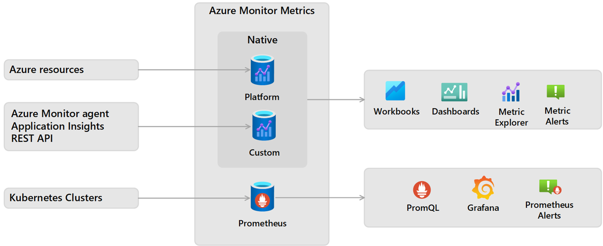
- Native metrics use tools in Azure Monitor for analysis and alerting.
- Platform metrics are collected from Azure resources. They require no configuration and have no cost.
- Custom metrics are collected from different sources that you configure, including applications and agents running on virtual machines.
- Prometheus metrics (preview) are collected from Kubernetes clusters, including Azure Kubernetes Service (AKS), and use industry-standard tools for analyzing and alerting, such as PromQL and Grafana.
Additional Background and Information
What is Prometheus? Prometheus is an open-source toolkit that collects data for monitoring and alerting.
Prometheus Features:
- A multi-dimensional data model with time series data identified by metric name and key/value pairs
- PromQL (PromQL component called Prom Kubernetes - an extension to support Prometheus) provides a flexible query language to use this dimensionality.
- Time series collection happens via a pull model over Hypertext Transfer Protocol (HTTP)
- Pushing time series is supported via an intermediary gateway
- Targets are discovered via service discovery or static configuration
What is Azure Managed Grafana?
Azure Managed Grafana is a data visualization platform built on top of the Grafana software by Grafana Labs. It's built as a fully managed Azure service operated and supported by Microsoft. Grafana helps you combine metrics, logs, and traces into a single user interface. With its extensive support for data sources and graphing capabilities, you can view and analyze your application and infrastructure telemetry data in real-time.
Azure Managed Grafana is optimized for the Azure environment. It works seamlessly with many Azure services. Specifically, for the current preview, it provides with the following integration features:
- Built-in support for Azure Monitor and Azure Data Explorer
- User authentication and access control using Azure Active Directory identities
- Direct import of existing charts from the Azure portal
Why use Azure Managed Grafana?
Managed Grafana lets you bring together all your telemetry data into one place. It can access various data sources supported, including your data stores in Azure and elsewhere. By combining charts, logs, and alerts into one view, you can get a holistic view of your application and infrastructure and correlate information across multiple datasets.
As a fully managed service, Azure Managed Grafana lets you deploy Grafana without having to deal with setup. The service provides high availability, service level agreement (SLA) guarantees, and automatic software updates.
You can share Grafana dashboards with people inside and outside your organization and allow others to join in for monitoring or troubleshooting.
Managed Grafana uses Azure Active Directory (Azure AD)’s centralized identity management, which allows you to control which users can use a Grafana instance, and you can use managed identities to access Azure data stores, such as Azure Monitor.
You can create dashboards instantaneously by importing existing charts directly from the Azure portal or by using prebuilt dashboards.
The differences between each of the metrics are summarized in the following table.
| Category | Native platform metrics | Native custom metrics | Prometheus metrics (preview) |
|---|---|---|---|
| Sources | Azure resources | Azure Monitor agent Application Insights Representational State Transfer (REST) Application Programming Interface (API) | Azure Kubernetes Service (AKS) cluster Any Kubernetes cluster through remote-write |
| Configuration | None | Varies by source | Enable Azure Monitor managed service for Prometheus |
| Stored | Subscription | Subscription | Azure Monitor workspace |
| Cost | No | Yes | Yes (free during preview) |
| Aggregation | pre-aggregated | pre-aggregated | raw data |
| Analyze | Metrics Explorer | Metrics Explorer | Prometheus Querying (PromQL) LanguageGrafana dashboards |
| Alert | metrics alert rule | metrics alert rule | Prometheus alert rule |
| Visualize | WorkbooksAzure dashboardGrafana | WorkbooksAzure dashboardGrafana | Grafana |
| Retrieve | Azure Command-Line Interface (CLI) Azure PowerShell cmdletsRepresentational State Transfer (REST) Application Programming Interface (API) or client library.NETGoJavaJavaScriptPython | Azure Command-Line Interface (CLI) Azure PowerShell cmdletsRepresentational State Transfer (REST) Application Programming Interface (API) or client library.NETGoJavaJavaScriptPython | Grafana |
Data collection
Azure Monitor collects metrics from the following sources. After these metrics are collected in the Azure Monitor metric database, they can be evaluated together regardless of their source:
- Azure resources: Platform metrics are created by Azure resources and give you visibility into their health and performance. Each type of resource creates a distinct set of metrics without any configuration required. Platform metrics are collected from Azure resources at a one-minute frequency unless specified otherwise in the metric's definition.
- Applications: Application Insights creates metrics for your monitored applications to help you detect performance issues and track trends in how your application is used. Values include Server response time and Browser exceptions.
- Virtual machine agents: Metrics are collected from the guest operating system of a virtual machine. You can enable guest operating system (OS) metrics for Windows virtual machines using the Windows diagnostic extension and Linux virtual machines by using the InfluxData Telegraf agent.
- Custom metrics: You can define metrics in addition to the standard metrics that are automatically available. You can define custom metrics in your application that are monitored by Application Insights. You can also create custom metrics for an Azure service by using the custom metrics Application Programming Interface (API).
- Kubernetes clusters: Kubernetes clusters typically send metric data to a local Prometheus server that you must maintain. Azure Monitor managed service for Prometheus provides a managed service that collects metrics from Kubernetes clusters and stores them in Azure Monitor Metrics.
A common type of log entry is an event, which is collected sporadically. Events are created by an application or service and typically include enough information to provide complete context on their own. For example, an event can indicate that a particular resource was created or modified, a new host started in response to increased traffic, or an error was detected in an application.
Because the format of the data can vary, applications can create custom logs by using the structure that they need. Metric data can even be stored in Logs to combine them with other monitoring data for trending and other data analysis.
The following is a list of the different ways that you can use Logs in Azure Monitor.
- Analyze - Use Log Analytics in the Azure portal to write log queries and interactively analyze log data using the powerful Data Explorer analysis engine. Use the Application Insights analytics console in the Azure portal to write log queries and interactively analyze log data from Application Insights.
- Visualize - Pin query results rendered as tables or charts to an Azure dashboard. Create a workbook to combine with multiple sets of data in an interactive report. Export the results of a query to Power BI to use different visualizations and share with users outside of Azure. Export the results of a query to Grafana to use its dashboarding and combine with other data sources.
- Alert - Configure a log alert rule that sends a notification or takes automated action when the results of the query match a particular result. Configure a metric alert rule on certain log data logs extracted as metrics.
- Retrieve - Access log query results from a command line using Azure command-line interface (CLI). Access log query results from a command line using PowerShell cmdlets. Access log query results from a custom application using Representational State Transfer (REST) Application Programming Interface (API).
- Export - Build a workflow to retrieve log data and copy it to an external location using Logic Apps.
Log queries
Data in Azure Monitor Logs is retrieved using a log query written with the Kusto query language, which allows you to quickly retrieve, consolidate, and analyze collected data. Use Log Analytics to write and test log queries in the Azure portal. It allows you to work with results interactively or pin them to a dashboard to view them with other visualizations.

Security tools use of Monitor logs
- Microsoft Defender for Cloud stores data that it collects in a Log Analytics workspace where it can be analyzed with other log data.
- Azure Sentinel stores data from data sources into a Log Analytics workspace.
Enable Log Analytics
Log Analytics is part of Microsoft Azure's overall monitoring solution. Log Analytics helps you monitors cloud and on-premises environments to maintain availability and performance.
Log Analytics is the primary tool in the Azure portal for writing log queries and interactively analyzing their results. Even if a log query is used elsewhere in Azure Monitor, you'll typically write and test the query first using Log Analytics.
You can start Log Analytics from several places in the Azure portal. The scope of the data available to Log Analytics is determined by how you start it.
- Select Logs from the Azure Monitor menu or Log Analytics workspaces menu.
- Select Analytics from the Overview page of an Application Insights application.
- Select Logs from the menu of an Azure resource.

In addition to interactively working with log queries and their results in Log Analytics, areas in Azure Monitor where you will use queries include the following:
- Alert rules. Alert rules proactively identify issues from data in your workspace. Each alert rule is based on a log search that is automatically run at regular intervals. The results are inspected to determine if an alert should be created.
- Dashboards. You can pin the results of any query into an Azure dashboard which allow you to visualize log and metric data together and optionally share with other Azure users.
- Views. You can create visualizations of data to be included in user dashboards with View Designer. Log queries provide the data used by tiles and visualization parts in each view.
- Export. When you import log data from Azure Monitor into Excel or Power BI, you create a log query to define the data to export.
- PowerShell. Use the results of a log query in a PowerShell script from a command line or an Azure Automation runbook that uses Invoke-AzOperationalInsightsQuery.
- Azure Monitor Logs API. The Azure Monitor Logs API allows any REST API client to retrieve log data from the workspace. The API request includes a query that is run against Azure Monitor to determine the data to retrieve.
At the center of Log Analytics is the Log Analytics workspace, which is hosted in Azure. Log Analytics collects data in the workspace from connected sources by configuring data sources and adding solutions to your subscription. Data sources and solutions each create different record types, each with its own set of properties. But you can still analyze sources and solutions together in queries to the workspace. This capability allows you to use the same tools and methods to work with a variety of data collected by a variety of sources.
Use the Log Analytics workspaces menu to create a Log Analytics workspace using the Azure portal. A Log Analytics workspace is a unique environment for Azure Monitor log data. Each workspace has its own data repository and configuration, and data sources and solutions are configured to store their data in a particular workspace. You require a Log Analytics workspace if you intend on collecting data from the following sources:
- Azure resources in your subscription
- On-premises computers monitored by System Center Operations Manager
- Device collections from Configuration Manager
- Diagnostics or log data from Azure storage
Manage connected sources for log analytics
The Azure Log Analytics agent was developed for comprehensive management across virtual machines in any cloud, on-premises machines, and those monitored by System Center Operations Manager. The Windows and Linux agents send collected data from different sources to your Log Analytics workspace in Azure Monitor, as well as any unique logs or metrics as defined in a monitoring solution. The Log Analytics agent also supports insights and other services in Azure Monitor such as Azure Monitor for VMs, Microsoft Defender for Cloud, and Azure Automation.
Comparison to Azure diagnostics extension
The Azure diagnostics extension in Azure Monitor can also be used to collect monitoring data from the guest operating system of Azure virtual machines. You may choose to use either or both depending on your requirements.
The key differences to consider are:
- Azure Diagnostics Extension can be used only with Azure virtual machines. The Log Analytics agent can be used with virtual machines in Azure, other clouds, and on-premises.
- Azure Diagnostics extension sends data to Azure Storage, Azure Monitor Metrics (Windows only) and Event Hubs. The Log Analytics agent collects data to Azure Monitor Logs.
- The Log Analytics agent is required for solutions, Azure Monitor for VMs, and other services such as Microsoft Defender for Cloud.

Data destinations
The Log Analytics agent sends data to a Log Analytics workspace in Azure Monitor. The Windows agent can be multihomed to send data to multiple workspaces and System Center Operations Manager management groups. The Linux agent can send to only a single destination.
Other services
The agent for Linux and Windows isn't only for connecting to Azure Monitor, it also supports Azure Automation to host the Hybrid Runbook worker role and other services such as Change Tracking, Update Management, and Microsoft Defender for Cloud.
Enable Azure monitor Alerts
As discussed already, Azure monitor has metrics, logging, and analytics features. Another feature is Monitor Alerts.
Responding to critical situations
In addition to allowing you to interactively analyze monitoring data, an effective monitoring solution must be able to proactively respond to critical conditions identified in the data that it collects. This could be sending a text or mail to an administrator responsible for investigating an issue. Or you could launch an automated process that attempts to correct an error condition.
Alerts
Alerts in Azure Monitor proactively notify you of critical conditions and potentially attempt to take corrective action. Alert rules based on metrics provide near real time alerting based on numeric values, while rules based on logs allow for complex logic across data from multiple sources.
Alert rules in Azure Monitor use action groups, which contain unique sets of recipients and actions that can be shared across multiple rules. Based on your requirements, action groups can perform such actions as using webhooks to have alerts start external actions or to integrate with your ITSM tools.
The unified alert experience in Azure Monitor includes alerts that were previously managed by Log Analytics and Application Insights. In the past, Azure Monitor, Application Insights, Log Analytics, and Service Health had separate alerting capabilities. Over time, Azure improved and combined both the user interface and different methods of alerting. The consolidation is still in process.
Overview of Alerts in Azure
The diagram below represents the flow of alerts.
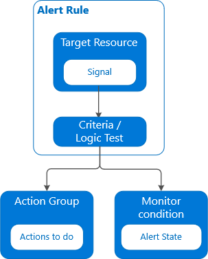
Alert rules are separated from alerts and the actions taken when an alert fires. The alert rule captures the target and criteria for alerting. The alert rule can be in an enabled or a disabled state. Alerts only fire when enabled.
The following are key attributes of an alert rule as shown:

- Target Resource: Defines the scope and signals available for alerting. A target can be any Azure resource. Example targets: a virtual machine, a storage account, a virtual machine scale set, a Log Analytics workspace, or an Application Insights resource. For certain resources (like virtual machines), you can specify multiple resources as the target of the alert rule.
- Signal: Emitted by the target resource. Signals can be of the following types: metric, activity log, Application Insights, and log.
- Criteria: A combination of signal and logic applied on a target resource. Examples:
- Percentage CPU > 70%
- Server Response Time > 4 ms
- Result count of a log query > 100
- Alert Name: A specific name for the alert rule configured by the user.
- Alert Description: A description for the alert rule configured by the user.
- Severity: The severity of the alert after the criteria specified in the alert rule is met. Severity can range from 0 to 4.
- Sev 0 = Critical
- Sev 1 = Error
- Sev 2 = Warning
- Sev 3 = Informational
- Sev 4 = Verbose
- Action: A specific action taken when the alert is fired.
What You Can Alert On
You can alert on metrics and logs. These include but are not limited to: - Metric values - Log search queries - Activity log events - Health of the underlying Azure platform - Tests for website availability
With the consolidation of alerting services still in process, there are some alerting capabilities that are not yet in the new alerts system.
| Monitor source | Signal type | Description |
|---|---|---|
| Service health | Activity log | Not supported. View Create activity log alerts on service notifications. |
| Application Insights | Web availability tests | Not supported. View Web test alerts. Available to any website that's instrumented to send data to Application Insights. Receive a notification when availability or responsiveness of a website is below expectations. |
Configure properties for diagnostic logging
Azure Monitor diagnostic logs are logs produced by an Azure service that provide rich, frequently collected data about the operation of that service. Azure Monitor makes two types of diagnostic logs available:
- Tenant logs. These logs come from tenant-level services that exist outside an Azure subscription, such as Azure Active Directory (Azure AD).
- Resource logs. These logs come from Azure services that deploy resources within an Azure subscription, such as Network Security Groups (NSGs) or storage accounts.

The content of these logs varies by Azure service and resource type. For example, NSG rule counters and Azure Key Vault audits are two types of diagnostic logs.
These logs differ from the activity log. The activity log provides insight into the operations, such as creating a VM or deleting a logic app, that Azure Resource Manager performed on resources in your subscription using. The activity log is a subscription-level log. Resource-level diagnostic logs provide insight into operations that were performed within that resource itself, such as getting a secret from a key vault.
These logs also differ from guest operating system (OS)–level diagnostic logs. Guest OS diagnostic logs are those collected by an agent running inside a VM or other supported resource type. Resource-level diagnostic logs require no agent and capture resource-specific data from the Azure platform itself, whereas guest OS–level diagnostic logs capture data from the OS and applications running on a VM.
Create diagnostic settings in Azure portal
You can configure diagnostic settings in the Azure portal either from the Azure Monitor menu or from the menu for the resource.
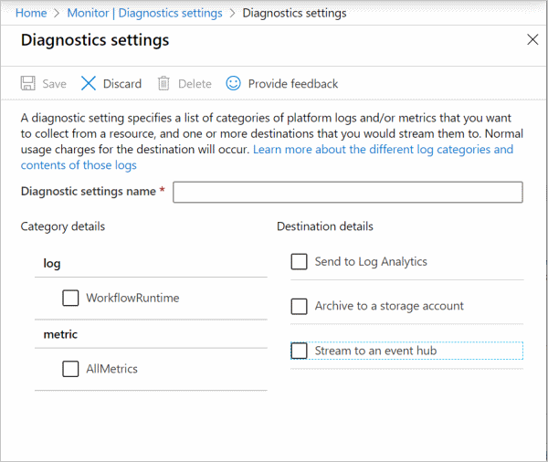
Uses for diagnostic logs
Here are some of the things you can do with diagnostic logs:
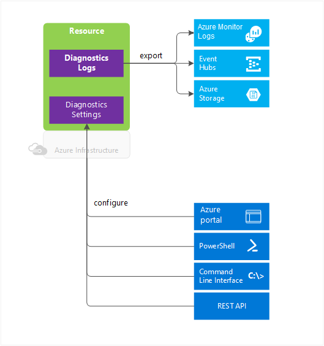
- Save them to a storage account for auditing or manual inspection. You can specify the retention time (in days) by using resource diagnostic settings.
- Stream them to event hubs for ingestion by a third-party service or custom analytics solution, such as Power BI.
- Analyze them with Azure Monitor, such that the data is immediately written to Azure Monitor with no need to first write the data to storage.
Streaming of diagnostic logs can be enabled programmatically, via the portal, or using the Azure Monitor REST APIs. Either way, you create a diagnostic setting in which you specify an Event Hubs namespace and the log categories and metrics you want to send in to the namespace. An event hub is created in the namespace for each log category you enable. A diagnostic log category is a type of log that a resource may collect.
Perform try-this exercises
Task 1 - Activity Logs and Alerts
In this task, we will configure an alert.
- Sign into the Portal.
- Search for and launch Monitor.
- Review the capabilities of Monitor: Monitor & Visualize Metrics, Query & Analyze Logs, and Setup Alerts & Actions.
- Select Activity log.
- Under the filters, click Timespan and review the drop-down choices.
- Open an event and discuss.
- Back in the Monitor main page, click Alerts then click + New alert rule.
- Under Resource click Select.
- Discuss how alerts can be scoped by subscription, resource type, and location.
- Select a resource for the alert and then click Done.
- Under Condition click Add.
- Select a signal, such as All Administrative operations, and then click Done.
- Under Action group, click Create. Review how action groups are used.
- Under Select an action type review the various ways the action group can be alerted.
- Select Email/SMS/Push/Voice.
- Review the configuration choices and finish creating your action group.
- Complete the Alert details and click Create alert rule.
- On the Alerts page, review how you can search your alerts by resource and time range.
Task 2 - Log Analytics
This lab requires a virtual machine in a running state.
In this task, we will configure Log Analytics and run a query.
- Sign into the Portal.
- Search for and launch Log Analytics workspaces.
- Click Add or Create.
- On the Basics tab, review and complete the required information.
- Under the Essentials view, review the Pricing tier detail (example: Pricing tier: Pay-as-you-go)
- Finish creating the workspace and wait for it to deploy.
- Go to resource and discuss how Log Analytics is used and configured.
- Under Workspace Data Sources select Virtual machines.
- Select a virtual machine and click Connect.
- While you wait for the connection, under Settings click Advanced settings.
- Click Connected sources. Discuss the possible sources like virtual machines and storage accounts.
- Click Data. Review the different data sources.
- Show how Windows event logs can be collected.
- Save any changes you make.
- Back at the Log Analytics workspace, Under General select Logs.
- Review how log data is stored in tables and can be queried.
- Select the Event table and then click Run.
- Review the results.
Knowledge check
-
Data collected by Azure Monitor collects fits into which two fundamental types. What are those types of data?
-
Events and Alerts
- Logs and Metrics (Ans)
-
Records and Triggers
-
When running a query of the Log Analytics workspace, which query language is used?
-
Contextual Query Language
- Embedded SQL
-
Kusto Query Language (Ans)
-
To be notified when any virtual machine in the production resource group is deleted, what should be configured?
-
Activity log alert (Ans)
- Application alert
-
Log alert
-
The IT managers would like to use a visualization tool for the Azure Monitor results. Each of the following is available, but there is a need to pick the one that will allow for insights and investigation of the data; which should be used?
-
Dashboard
- Monitor Metrics (Ans)
- Power BI
Enable and manage Microsoft Defender for Cloud
Introduction Microsoft Defender for Cloud is your central location for setting and monitoring your organization's security posture. You can see which solutions adhere to security measures and which systems need to be secured.
Scenario A security engineer uses Microsoft Defender for Cloud to track, maintain and improve an organization's security posture, you'll work on such tasks as:
- Implement security recommendations from Microsoft Defender for Cloud.
- Review your secure score and respond to it.
- Prevent attacks with Microsoft Defender for Cloud.
MITRE Attack matrix
The MITRE ATT&CK matrix is a publicly accessible knowledge base for understanding the various tactics and techniques used by attackers during a cyberattack.
The knowledge base is organized into several categories: pre-attack, initial access, execution, persistence, privilege escalation, defense evasion, credential access, discovery, lateral movement, collection, exfiltration, and command and control.
Tactics (T) represent the "why" of an ATT&CK technique or sub-technique. It is the adversary's tactical goal: the reason for performing an action. For example, an adversary may want to achieve credential access.
Techniques (T) represent "how'" an adversary achieves a tactical goal by performing an action. For example, an adversary may dump credentials to achieve credential access.
Common Knowledge (CK) in ATT&CK stands for common knowledge, essentially the documented modus operandi of tactics and techniques executed by adversaries.
Defender for Cloud uses the MITRE Attack matrix to associate alerts with their perceived intent, helping formalize security domain knowledge.
Example: Pre-Attack
| MITRE Attack Tactic | Description |
|---|---|
| Pre-Attack | Pre-Attack could be either an attempt to access a certain resource regardless of a malicious intent, or a failed attempt to gain access to a target system to gather information prior to exploitation. This step is detected as an attempt, originating from outside the network, to scan the target system and identify an entry point. |

Example: Initial Access
| MITRE Attack Tactic | Description |
|---|---|
| Initial Access | Initial Access is the stage where an attacker manages to get a foothold on the attacked resource. This stage is relevant for compute hosts and resources such as user accounts, certificates etc. Threat actors will often be able to control the resource after this stage. |
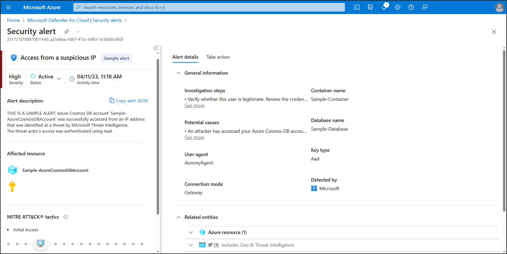
Implement Microsoft Defender for Cloud
Microsoft Defender for Cloud is a solution for cloud security posture management (CSPM) and cloud workload protection (CWP) that finds weak spots across your cloud configuration, helps strengthen the overall security posture of your environment, and can protect workloads across multicloud and hybrid environments from evolving threats.
For an interactive overview of how to Manage your cloud security posture with Microsoft Defender for Cloud, click on the image below.

Defender for Cloud fills three vital needs as you manage the security of your resources and workloads in the cloud and on-premises:
- Defender for Cloud secure score continually assesses your security posture so you can track new security opportunities and precisely report on the progress of your security efforts.
- Defender for Cloud recommendations secures your workloads with step-by-step actions that protect your workloads from known security risks.
- Defender for Cloud alerts defends your workloads in real-time so you can react immediately and prevent security events from developing.
Strengthen the security posture of your cloud resources
- Get a continuous assessment of the security of your cloud resources running in Azure, AWS, and Google Cloud.
- Use built-in policies and prioritized recommendations that are aligned to key industry and regulatory standards or build custom requirements that meet your organization's needs.
- Gather actionable insights by discovering your complete digital footprint and external attack surface signals and use them to automate recommendations and help ensure that resources are configured securely and meet your compliance needs.
Protect cloud and hybrid workloads against threats
Microsoft Defender for Cloud enables you to protect against evolving threats across multicloud and hybrid environments. You will be able to understand vulnerabilities with insights from industry-leading security research and secure your critical workloads across VMs, containers, databases, storage, app services, and more. Use many options to automate and streamline your security administration from a single place.
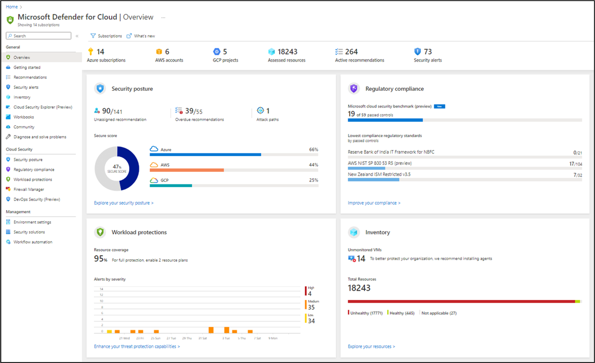
Protect your resources and track your security progress
Microsoft Defender for Cloud's features covers the two broad pillars of cloud security:
- Cloud Security Posture Management (CSPM) - Remediate security issues and watch your security posture improve
- Cloud Workload Protection (CWP) - Identify unique workload security requirements
Protect all of your resources under one roof
Because Defender for Cloud is an Azure-native service, many Azure services are monitored and protected without needing any deployment, but you can also add resources that are on-premises or in other public clouds.
When necessary, Defender for Cloud can automatically deploy a Log Analytics agent to gather security-related data. For Azure machines, deployment is handled directly. For hybrid and multicloud environments, Microsoft Defender plans are extended to non-Azure machines with the help of Azure Arc. Cloud Security Posture Management (CSPM) features are extended to multicloud machines without the need for any agents.
Defend your Azure-native resources
Defender for Cloud helps you detect threats across:
- Azure Platform as a Service (PaaS) services - Detect threats targeting Azure services, including Azure App Service, Azure SQL, Azure Storage Account, and more data services. You can also perform anomaly detection on your Azure activity logs using the native integration with Microsoft Defender for Cloud Apps (formerly known as Microsoft Cloud App Security).
- Azure data services - Defender for Cloud includes capabilities that help you automatically classify your data in Azure SQL. You can also get assessments for potential vulnerabilities across Azure SQL and Storage services and recommendations for how to mitigate them.
- Networks - Defender for Cloud helps you limit exposure to brute force attacks. By reducing access to virtual machine ports and using just-in-time VM access, you can harden your network by preventing unnecessary access. You can set secure access policies on selected ports for only authorized users, allowed source IP address ranges or IP addresses, and for a limited amount of time.
Defend your on-premises resources
In addition to defending your Azure environment, you can add Defender for Cloud capabilities to your hybrid cloud environment to protect your non-Azure servers. To help you focus on what matters the most, you'll get customized threat intelligence and prioritized alerts according to your specific environment.
To extend protection to on-premises machines, deploy Azure Arc and enable Defender for Cloud's enhanced security features.
Defend resources running on other clouds
Defender for Cloud can protect resources in other clouds (such as Amazon Web Services AWS and Google Cloud Platform GCP).
For example, if you've connected an Amazon Web Services (AWS) account to an Azure subscription, you can enable any of these protections:
- Defender for Cloud's CSPM features extend to your AWS resources. This agentless plan assesses your AWS resources according to AWS-specific security recommendations, and these are included in your secure score. The resources will also be assessed for compliance with built-in standards specific to AWS (AWS Center for Internet Security (CIS), AWS Payment Card Industry (PCI) Data Security Standards (DSS), and AWS Foundational Security Best Practices). Defender for Cloud's asset inventory page is a multicloud enabled feature helping you manage your AWS resources alongside your Azure resources.
- Microsoft Defender for Kubernetes extends its container threat detection and advanced defenses to your Amazon Elastic Kubernetes Service (EKS) Linux clusters.
- Microsoft Defender for Servers brings threat detection and advanced defenses to your Windows and Linux Elastic Compute Cloud 2 (EC2) instances. This plan includes the integrated license for Microsoft Defender for Endpoint, security baselines, and OS level assessments, vulnerability assessment scanning, adaptive application controls (AAC), file integrity monitoring (FIM), and more.
Close vulnerabilities before they get exploited
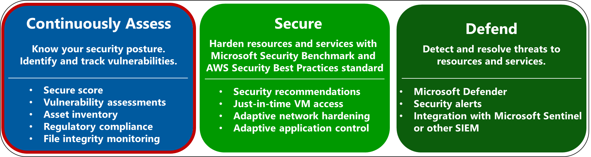
Defender for Cloud includes vulnerability assessment solutions for virtual machines, container registries, and SQL servers as part of the enhanced security features. Some of the scanners are powered by Qualys. But you don't need a Qualys license or even a Qualys account - everything's handled seamlessly inside Defender for Cloud.
Microsoft Defender for Servers includes automatic, native integration with Microsoft Defender for Endpoint. With this integration enabled, you'll have access to the vulnerability findings from Microsoft Defender Vulnerability Management.
Review the findings from these vulnerability scanners and respond to them all from within Defender for Cloud. This broad approach brings Defender for Cloud closer to being the single pane of glass for all of your cloud security efforts.
Enforce your security policy from the top down
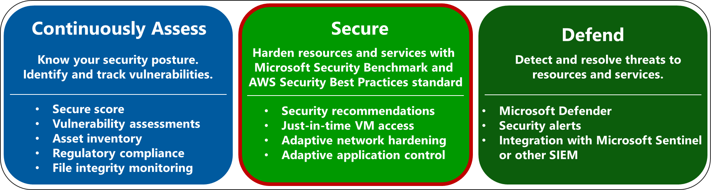
It's a security basic to know and make sure your workloads are secure, and it starts with having tailored security policies in place. Because policies in Defender for Cloud are built on top of Azure Policy controls, you're getting the full range and flexibility of a world-class policy solution. In Defender for Cloud, you can set your policies to run on management groups, across subscriptions, and even for a whole tenant.
Defender for Cloud continuously discovers new resources that are being deployed across your workloads and assesses whether they're configured according to security best practices. If not, they're flagged, and you get a prioritized list of recommendations for what you need to fix. Recommendations help you reduce the attack surface across each of your resources.
The list of recommendations is enabled and supported by the Microsoft cloud security benchmark. This Microsoft-authored benchmark, based on common compliance frameworks, began with Azure and now provides a set of guidelines for security and compliance best practices for multiple cloud environments.
In this way, Defender for Cloud enables you not just to set security policies but to apply secure configuration standards across your resources.
Extend Defender for Cloud with Defender plans and external monitoring
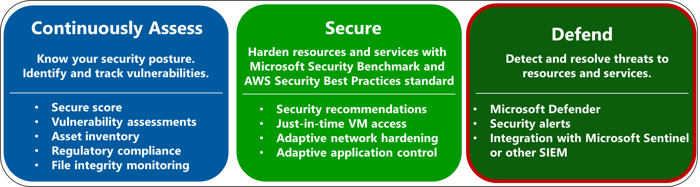
You can extend the Defender for Cloud protection with the following:
- Advanced threat protection features for virtual machines, Structured Query Language SQL databases, containers, web applications, your network, and more - Protections include securing the management ports of your VMs with just-in-time access and adaptive application controls to create allowlists for what apps should and shouldn't run on your machines.
The Defender plans of Microsoft Defender for Cloud offer comprehensive defenses for the compute, data, and service layers of your environment:
- Microsoft Defender for Servers
- Microsoft Defender for Storage
- Microsoft Defender for Structured Query Language (SQL)
- Microsoft Defender for Containers
- Microsoft Defender for App Service
- Microsoft Defender for Key Vault
- Microsoft Defender for Resource Manager
- Microsoft Defender for Domain Name System (DNS)
- Microsoft Defender for open-source relational databases
- Microsoft Defender for Azure Cosmos Database (DB)
- Defender Cloud Security Posture Management (CSPM)
- Security governance and regulatory compliance
- Cloud security explorer
- Attack path analysis
- Agentless scanning for machines
- Defender for DevOps
Use the advanced protection tiles in the workload protections Azure dashboard to monitor and configure each of these protections.
Microsoft Defender for the Internet of Things (IoT) is a separate product.
- Security alerts - When Defender for Cloud detects a threat in any area of your environment, it generates a security alert. These alerts describe details of the affected resources, suggested remediation steps, and in some cases, an option to trigger a logic app in response. Whether an alert is generated by Defender for Cloud or received by Defender for Cloud from an integrated security product, you can export it. To export your alerts to Microsoft Sentinel, any third-party Security information and event management (SIEM), or any other external tool, follow the instructions in Stream alerts to a SIEM, Security orchestration, automation and response (SOAR), or IT Service Management solution. Defender for Cloud's threat protection includes fusion kill-chain analysis, which automatically correlates alerts in your environment based on cyber kill-chain analysis, to help you better understand the full story of an attack campaign, where it started, and what kind of impact it had on your resources. Defender for Cloud's supported kill chain intents are based on version 9 of the MITRE ATT&CK matrix.
Security posture
Cloud Security Posture Management (CSPM) - Remediate security issues and watch your security posture improve
In Defender for Cloud, the posture management features provide the following:
- Hardening guidance - to help you efficiently and effectively improve your security
- Visibility - to help you understand your current security situation

Defender for Cloud continually assesses your resources, subscriptions, and organization for security issues and shows your security posture in the secure score, an aggregated score of the security findings that tells you, at a glance, your current security situation: the higher the score, the lower the identified risk level.
As soon as you open Defender for Cloud for the first time, Defender for Cloud:
- Generates a secure score for your subscriptions based on an assessment of your connected resources compared with the guidance in the Microsoft cloud security benchmark. Use the score to understand your security posture and the compliance dashboard to review your compliance with the built-in benchmark. When you've enabled the enhanced security features, you can customize the standards used to assess your compliance and add other regulations, such as the National Institute of Standards and Technology (NIST) and Azure Center for Internet Security (CIS) or organization-specific security requirements. You can also apply recommendations and score based on the AWS Foundational Security Best practices standards.
- Provides hardening recommendations based on any identified security misconfigurations and weaknesses. Use these security recommendations to strengthen the security posture of your organization's Azure, hybrid, and multicloud resources.
- Analyzes and secure's your attack paths through the cloud security graph, which is a graph-based context engine that exists within Defender for Cloud. The cloud security graph collects data from your multicloud environment and other data sources. For example, the cloud assets inventory, connections and lateral movement possibilities between resources, exposure to the internet, permissions, network connections, vulnerabilities, and more. The data collected is then used to build a graph representing your multicloud environment.
Attack path analysis is a graph-based algorithm that scans the cloud security graph. The scans expose exploitable paths attackers may use to breach your environment to reach your high-impact assets. Attack path analysis exposes those attack paths and suggests recommendations as to how best to remediate the issues that will break the attack path and prevent a successful breach.
By taking your environment's contextual information into account, such as internet exposure, permissions, lateral movement, and more. Attack path analysis identifies issues that may lead to a breach in your environment and helps you to remediate the highest risk ones first.
Additional background and details
National Institute of Standards and Technology (NIST)
The National Institute of Standards and Technology (NIST) promotes and maintains measurement standards and guidance to help organizations assess risk. In response to Executive Order 13636 on strengthening the cybersecurity of federal networks and critical infrastructure, NIST released the Framework for Improving Critical Infrastructure Cybersecurity (FICIC) in February 2014.
The main priorities of the FICIC were to establish a set of standards and practices to help organizations manage cybersecurity risk, while enabling business efficiency. The NIST Framework addresses cybersecurity risk without imposing additional regulatory requirements for both government and private sector organizations.
The FICIC references globally recognized standards including NIST Special Publication 800-53 found in Appendix A of the NIST's Framework for Improving Critical Infrastructure Cybersecurity. Each control within the FICIC framework is mapped to corresponding NIST 800-53 controls within the FedRAMP Moderate Baseline.
Center for Internet Security (CIS)
The Center for Internet Security is a nonprofit entity whose mission is to identify, develop, validate, promote, and sustain best practice solutions for cyberdefense. It draws on the expertise of cybersecurity and IT professionals from government, business, and academia from around the world. To develop standards and best practices, including CIS benchmarks, controls, and hardened images, they follow a consensus decision-making model.
CIS benchmarks are configuration baselines and best practices for securely configuring a system. Each of the guidance recommendations references one or more CIS controls that were developed to help organizations improve their cyberdefense capabilities. CIS controls map to many established standards and regulatory frameworks, including the NIST Cybersecurity Framework (CSF) and NIST SP 800-53, the International Organization for Standardization (ISO) 27000 series of standards, Payment Card Industry (PCI) Data Security Standards (DSS), Health Insurance Portability and Accountability Act of 1996 (HIPAA), and others.
Each benchmark undergoes two phases of consensus review. The first occurs during initial development when experts convene to discuss, create, and test working drafts until they reach consensus on the benchmark. During the second phase, after the benchmark has been published, the consensus team reviews the feedback from the internet community for incorporation into the benchmark.
The Center for Internet Security (CIS) benchmarks provide two levels of security settings:
- Level 1 recommends essential basic security requirements that can be configured on any system and should cause little or no interruption of service or reduced functionality.
- Level 2 recommends security settings for environments requiring greater security that could result in some reduced functionality.
CIS Hardened Images are securely configured virtual machine images based on CIS Benchmarks hardened to either a Level 1 or Level 2 CIS benchmark profile. Hardening is a process that helps protect against unauthorized access, denial of service, and other cyberthreats by limiting potential weaknesses that make systems vulnerable to cyberattacks.
Workload protections
Defender for Cloud offers security alerts that are powered by Microsoft Threat Intelligence. It also includes a range of advanced, intelligent protections for your workloads. The workload protections are provided through Microsoft Defender plans specific to the types of resources in your subscriptions. For example, you can enable Microsoft Defender for Storage to get alerted about suspicious activities related to your storage resources.
The Cloud workload dashboard includes the following sections:
- Microsoft Defender for Cloud coverage - Here you can see the resources types in your subscription that are eligible for protection by Defender for Cloud. Wherever relevant, you can upgrade here as well. If you want to upgrade all possible eligible resources, select Upgrade all.
- Security alerts - When Defender for Cloud detects a threat in any area of your environment, it generates an alert. These alerts describe details of the affected resources, suggested remediation steps, and in some cases an option to trigger a logic app in response. Selecting anywhere in this graph opens the Security alerts page.
- Advanced protection - Defender for Cloud includes many advanced threat protection capabilities for virtual machines, Structured Query Language (SQL) databases, containers, web applications, your network, and more. In this advanced protection section, you can see the status of the resources in your selected subscriptions for each of these protections. Select any of them to go directly to the configuration area for that protection type.
- Insights - This rolling pane of news, suggested reading, and high priority alerts gives Defender for Cloud's insights into pressing security matters that are relevant to you and your subscription. Whether it's a list of high severity Common Vulnerabilities and Exposures (CVEs) discovered on your VMs by a vulnerability analysis tool, or a new blog post by a member of the Defender for Cloud team, you'll find it here in the Insights panel.
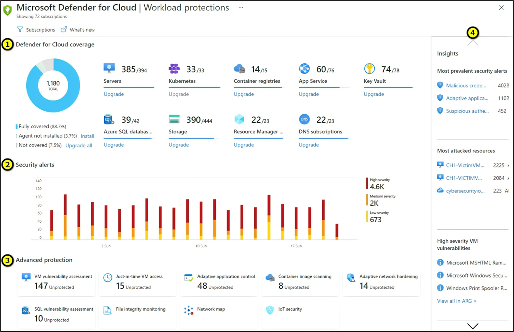
Deploy Microsoft Defender for Cloud
Basic and enhanced security features
Basic features
When you open Defender for Cloud in the Azure portal for the first time or if you enable it through the Application Programming Interface (API), Defender for Cloud is enabled for free on all your Azure subscriptions. Defender for Cloud provides foundational cloud security and posture management (CSPM) features by default. The foundational CSPM includes a secure score, security policy and basic recommendations, and network security assessment to help you protect your Azure resources.
Defender Cloud Security Posture Management (CSPM) plan options
Defender for cloud offers foundational multicloud CSPM capabilities for free. These capabilities are automatically enabled by default on any subscription or account that has been onboarded to Defender for Cloud. The foundational CSPM includes asset discovery, continuous assessment and security recommendations for posture hardening, compliance with Microsoft Cloud Security Benchmark (MCSB), and a Secure score which measure the current status of your organization’s posture.
The optional Defender CSPM plan provides advanced posture management capabilities such as Attack path analysis, Cloud security explorer, advanced threat hunting, security governance capabilities, and also tools to assess your security compliance with a wide range of benchmarks, regulatory standards, and any custom security policies required in your organization, industry, or region.
The following table summarizes each plan and its cloud availability.
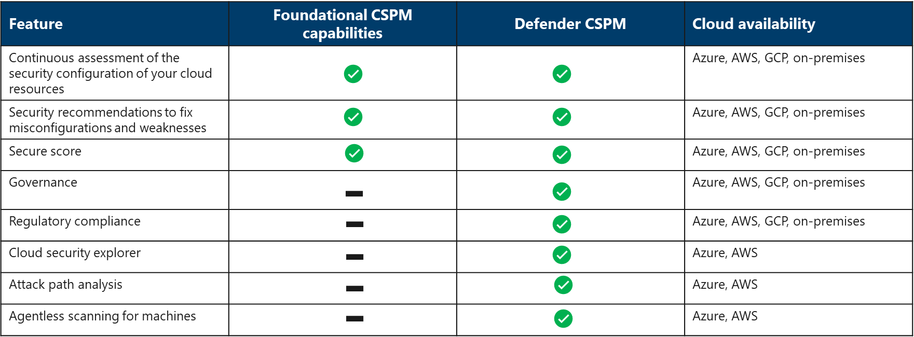
Enhanced features
If you want to try out the enhanced security features, enable enhanced security features for free for the first 30 days. At the end of 30 days, if you decide to continue using the service, we'll automatically start charging for usage.
Prerequisites
To get started with Defender for Cloud, you'll need a Microsoft Azure subscription with Defender for Cloud enabled. If you don't have an Azure subscription, you can sign up for a free subscription.
- You can enable Microsoft Defender for Storage accounts at either the subscription level or resource level.
- You can enable Microsoft Defender for SQL (Structured Query Language) at either the subscription level or resource level.
- You can enable Microsoft Defender for open-source relational databases at the resource level only.
- The Microsoft Defender plans available at the workspace level are Microsoft Defender for Servers and Microsoft Defender for SQL servers on machines.
When you enabled Defender plans on an entire Azure subscription, the protections are inherited by all resources in the subscription.
Microsoft Defender for Cloud uses monitoring components to collect data from your resources. These extensions are automatically deployed when you turn on a Defender plan. Each Defender plan has its own requirements for monitoring components, so it's important that the required extensions are deployed to your resources to get all of the benefits of each plan.
The Defender plans show you the monitoring coverage for each Defender plan. If the monitoring coverage is Full, all of the necessary extensions are installed. If the monitoring coverage is Partial, the information tooltip tells you what extensions are missing. For some plans, you can configure specific monitoring settings.
Enhanced features
When you enable the enhanced security features (paid), Defender for Cloud can provide unified security management and threat protection across your hybrid cloud workloads, including:
- Microsoft Defender for Endpoint - Microsoft Defender for Servers includes Microsoft Defender for Endpoint for comprehensive endpoint detection and response (EDR).
- Vulnerability assessment for virtual machines, container registries, and SQL resources - Easily enable vulnerability assessment solutions to discover, manage, and resolve vulnerabilities. View, investigate, and remediate the findings directly from within Defender for Cloud.
- Multicloud security - Connect your accounts from Amazon Web Services (AWS) and Google Cloud Platform (GCP) to protect resources and workloads on those platforms with a range of Microsoft Defender for Cloud security features.
- Hybrid security – Get a unified view of security across all of your on-premises and cloud workloads. Apply security policies and continuously assess the security of your hybrid cloud workloads to ensure compliance with security standards. Collect, search, and analyze security data from multiple sources, including firewalls and other partner solutions.
- Threat protection alerts - Advanced behavioral analytics and the Microsoft Intelligent Security Graph provide an edge over evolving cyber-attacks. Built-in behavioral analytics and machine learning can identify attacks and zero-day exploits. Monitor networks, machines, data stores (SQL servers hosted inside and outside Azure, Azure SQL databases, Azure SQL Managed Instance, and Azure Storage), and cloud services for incoming attacks and post-breach activity. Streamline investigation with interactive tools and contextual threat intelligence.
- Track compliance with a range of standards - Defender for Cloud continuously assesses your hybrid cloud environment to analyze the risk factors according to the controls and best practices in the Microsoft cloud security benchmark. When you enable enhanced security features, you can apply a range of other industry standards, regulatory standards, and benchmarks according to your organization's needs. Add standards and track your compliance with them from the regulatory compliance dashboard.
- Access and application controls - Block malware and other unwanted applications by applying machine learning-powered recommendations adapted to your specific workloads to create allowlists and blocklists. Reduce the network attack surface with just-in-time, controlled access to management ports on Azure VMs. Access and application control drastically reduce exposure to brute force and other network attacks.
- Container security features - Benefit from vulnerability management and real-time threat protection in your containerized environments. Charges are based on the number of unique container images pushed to your connected registry. After an image has been scanned once, you won't be charged for it again unless it's modified and pushed once more.
- Breadth threat protection for resources connected to Azure - Cloud-native threat protection for the Azure services common to all of your resources: Azure Resource Manager, Azure Domain Name System (DNS), Azure network layer, and Azure Key Vault. Defender for Cloud has unique visibility into the Azure management layer and the Azure DNS layer and can therefore protect cloud resources that are connected to those layers.
- Manage your Cloud Security Posture Management (CSPM) - CSPM offers you the ability to remediate security issues and review your security posture through the tools provided.
These tools include: - Security governance and regulatory compliance - What is Security governance and regulatory compliance? Security governance and regulatory compliance refer to the policies and processes which organizations have in place to ensure that they comply with laws, rules, and regulations put in place by external bodies (government) that control activity in a given jurisdiction. Defender for Cloud allows you to view your regulatory compliance through the regulatory compliance dashboard. Defender for Cloud continuously assesses your hybrid cloud environment to analyze the risk factors according to the controls and best practices in the standards you've applied to your subscriptions. The dashboard reflects the status of your compliance with these standards. - Cloud security graph - What is a cloud security graph? The cloud security graph is a graph-based context engine that exists within Defender for Cloud. The cloud security graph collects data from your multicloud environment and other data sources. For example, the cloud assets inventory, connections and lateral movement possibilities between resources, exposure to the internet, permissions, network connections, vulnerabilities, and more. The data collected is then used to build a graph representing your multicloud environment. Defender for Cloud then uses the generated graph to perform an attack path analysis and find the issues with the highest risk that exist within your environment. You can also query the graph using the cloud security explorer. - Attack path analysis - What is Attack path analysis? Attack path analysis helps you to address the security issues that pose immediate threats with the greatest potential of being exploited in your environment. Defender for Cloud analyzes which security issues are part of potential attack paths that attackers could use to breach your environment. It also highlights the security recommendations that need to be resolved in order to mitigate the issue. - Agentless scanning for machines - What is agentless scanning for machines? Microsoft Defender for Cloud maximizes coverage on OS posture issues and extends beyond the reach of agent-based assessments. With agentless scanning for VMs, you can get frictionless, wide, and instant visibility on actionable posture issues without installed agents, network connectivity requirements, or machine performance impact. Agentless scanning for VMs provides vulnerability assessment and software inventory powered by Defender vulnerability management in Azure and Amazon AWS environments. Agentless scanning is available in Defender Cloud Security Posture Management (CSPM) and Defender for Servers.
Azure Arc
Today, companies struggle to control and govern increasingly complex environments that extend across data centers, multiple clouds, and edge. Each environment and cloud possesses its own set of management tools, and new DevOps and IT operations (ITOps) operational models can be hard to implement across resources.
Azure Arc simplifies governance and management by delivering a consistent multicloud and on-premises management platform.
Azure Arc provides a centralized, unified way to:
- Manage your entire environment together by projecting your existing non-Azure and/or on-premises resources into Azure Resource Manager.
- Manage virtual machines, Kubernetes clusters, and databases as if they are running in Azure.
- Use familiar Azure services and management capabilities, regardless of where they live.
- Continue using traditional IT operations (ITOps) while introducing DevOps practices to support new cloud-native patterns in your environment.
- Configure custom locations as an abstraction layer on top of Azure Arc-enabled Kubernetes clusters and cluster extensions.
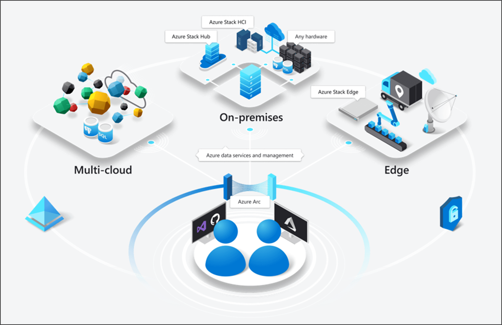
Azure Arc capabilities
Currently, Azure Arc allows you to manage the following resource types hosted outside of Azure:
- Servers: Manage Windows and Linux physical servers and virtual machines hosted outside of Azure.
- Kubernetes clusters: Attach and configure Kubernetes clusters running anywhere with multiple supported distributions.
- Azure data services: Run Azure data services on-premises, at the edge, and in public clouds using Kubernetes and the infrastructure of your choice. SQL Managed Instance and PostgreSQL server (preview) services are currently available.
- SQL Server: Extend Azure services to SQL Server instances hosted outside of Azure.
- Virtual machines (preview): Provision, resize, delete, and manage virtual machines based on VMware vSphere or Azure Stack hyper-converged infrastructure (HCI) and enable VM self-service through role-based access.

Key features and benefits
Some of the key scenarios that Azure Arc supports are:
- Implement consistent inventory, management, governance, and security for servers across your environment.
- Configure Azure VM extensions to use Azure management services to monitor, secure, and update your servers.
- Manage and govern Kubernetes clusters at scale.
- Use GitOps to deploy configuration across one or more clusters from Git repositories.
- Zero-touch compliance and configuration for Kubernetes clusters using Azure Policy.
- Run Azure data services on any Kubernetes environment as if it runs in Azure (specifically Azure SQL Managed Instance and Azure Database for PostgreSQL server, with benefits such as upgrades, updates, security, and monitoring). Use elastic scale and apply updates without any application downtime, even without continuous connection to Azure.
- Create custom locations on top of your Azure Arc-enabled Kubernetes clusters, using them as target locations for deploying Azure services instances. Deploy your Azure service cluster extensions for Azure Arc-enabled data services, App services on Azure Arc (including web, function, and logic apps), and Event Grid on Kubernetes.
- Perform virtual machine lifecycle and management operations for VMware vSphere and Azure Stack hyper-converged infrastructure (HCI) environments.
- A unified experience viewing your Azure Arc-enabled resources, whether you are using the Azure portal, the Azure CLI, Azure PowerShell, or Azure REST API.
Microsoft cloud security benchmark
The Microsoft cloud security benchmark (MCSB) provides prescriptive best practices and recommendations to help improve the security of workloads, data, and services on Azure and your multi-cloud environment, focusing on cloud-centric control areas with input from a set of holistic Microsoft and industry security guidance that includes:
- Cloud Adoption Framework: Guidance on security, including strategy, roles and responsibilities, Azure Top 10 Security Best Practices, and reference implementation.
- Azure Well-Architected Framework: Guidance on securing your workloads on Azure.
- The Chief Information Security Officer (CISO) Workshop: Program guidance and reference strategies to accelerate security modernization using Zero Trust principles.
- Other industry and cloud service provider's security best practice standards and framework: Examples include the Amazon Web Services (AWS) Well-Architected Framework, Center for Internet Security (CIS) Controls, National Institute of Standards and Technology (NIST), and Payment Card Industry Data Security Standard (PCI-DSS).
Microsoft cloud security benchmark features
Comprehensive multi-cloud security framework: Organizations often have to build an internal security standard to reconcile security controls across multiple cloud platforms to meet security and compliance requirements on each of them. This often requires security teams to repeat the same implementation, monitoring, and assessment across the different cloud environments (often for different compliance standards). This creates unnecessary overhead, cost, and effort. To address this concern, we enhanced the Azure Security Benchmark (ASB) to the Microsoft cloud security benchmark (MCSB) to help you quickly work with different clouds by:
- Providing a single control framework to easily meet the security controls across clouds
- Providing consistent user experience for monitoring and enforcing the multi-cloud security benchmark in Defender for Cloud
- Staying aligned with Industry Standards (e.g., Center for Internet Security, National Institute of Standards and Technology, Payment Card Industry)

Automated control monitoring for AWS in Microsoft Defender for Cloud: You can use Microsoft Defender for Cloud Regulatory Compliance Dashboard to monitor your AWS environment against Microsoft cloud security benchmark (MCSB), just like how you monitor your Azure environment. We developed approximately 180 AWS checks for the new AWS security guidance in MCSB, allowing you to monitor your AWS environment and resources in Microsoft Defender for Cloud.
Example: Microsoft Defender for Cloud - Regulatory compliance dashboard
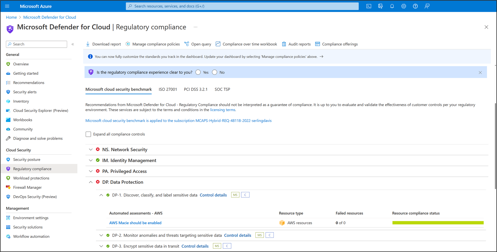
Azure guidance and security principles: Azure security guidance, security principles, features, and capabilities.
Controls
| Control Domains | Description |
|---|---|
| Network security (NS) | Network Security covers controls to secure and protect networks, including securing virtual networks, establishing private connections, preventing and mitigating external attacks, and securing Domain Name System (DNS). |
| Identity Management (IM) | Identity Management covers controls to establish a secure identity and access controls using identity and access management systems, including the use of single sign-on, strong authentications, managed identities (and service principals) for applications, conditional access, and account anomalies monitoring. |
| Privileged Access (PA) | Privileged Access covers controls to protect privileged access to your tenant and resources, including a range of controls to protect your administrative model, administrative accounts, and privileged access workstations against deliberate and inadvertent risk. |
| Data Protection (DP) | Data Protection covers control of data protection at rest, in transit, and via authorized access mechanisms, including discover, classify, protect, and monitoring sensitive data assets using access control, encryption, key management, and certificate management. |
| Asset Management (AM) | Asset Management covers controls to ensure security visibility and governance over your resources, including recommendations on permissions for security personnel, security access to asset inventory and managing approvals for services and resources (inventory, track, and correct). |
| Logging and Threat Detection (LT) | Logging and Threat Detection covers controls for detecting threats on the cloud and enabling, collecting, and storing audit logs for cloud services, including enabling detection, investigation, and remediation processes with controls to generate high-quality alerts with native threat detection in cloud services; it also includes collecting logs with a cloud monitoring service, centralizing security analysis with a security event management (SEM), time synchronization, and log retention. |
| Incident Response (IR) | Incident Response covers controls in the incident response life cycle - preparation, detection and analysis, containment, and post-incident activities, including using Azure services (such as Microsoft Defender for Cloud and Sentinel) and/or other cloud services to automate the incident response process. |
| Posture and Vulnerability Management (PV) | Posture and Vulnerability Management focuses on controls for assessing and improving the cloud security posture, including vulnerability scanning, penetration testing, and remediation, as well as security configuration tracking, reporting, and correction in cloud resources. |
| Endpoint Security (ES) | Endpoint Security covers controls in endpoint detection and response, including the use of endpoint detection and response (EDR) and anti-malware service for endpoints in cloud environments. |
| Backup and Recovery (BR) | Backup and Recovery covers controls to ensure that data and configuration backups at the different service tiers are performed, validated, and protected. |
| DevOps Security (DS) | DevOps Security covers the controls related to the security engineering and operations in the DevOps processes, including deployment of critical security checks (such as static application security testing and vulnerability management) prior to the deployment phase to ensure the security throughout the DevOps process; it also includes common topics such as threat modeling and software supply security. |
| Governance and Strategy (GS) | Governance and Strategy provides guidance for ensuring a coherent security strategy and documented governance approach to guide and sustain security assurance, including establishing roles and responsibilities for the different cloud security functions, unified technical strategy, and supporting policies and standards. |
Configure Microsoft Defender for Cloud policies
What are security policies, initiatives
Microsoft Defender for Cloud applies security initiatives to your subscriptions. These initiatives contain one or more security policies. Each of those policies results in a security recommendation for improving your security posture.
What is a security initiative?
A security initiative is a collection of Azure Policy definitions or rules that are grouped together towards a specific goal or purpose. Security initiatives simplify the management of your policies by grouping a set of policies together, logically, as a single item.
A security initiative defines the desired configuration of your workloads and helps ensure you comply with the security requirements of your company or regulators.
Like security policies, Defender for Cloud initiatives are also created in Azure Policy. You can use Azure Policy to manage your policies, build initiatives, and assign initiatives to multiple subscriptions or entire management groups.
The default initiative automatically assigned to every subscription in Microsoft Defender for Cloud is the Microsoft cloud security benchmark. This benchmark is the Microsoft-authored set of guidelines for security and compliance best practices based on common compliance frameworks. This widely respected benchmark builds on the controls from the Center for Internet Security (CIS) and the National Institute of Standards and Technology (NIST) with a focus on cloud-centric security.
Defender for Cloud offers the following options for working with security initiatives and policies:
- View and edit the built-in default initiative - When you enable Defender for Cloud, the initiative named 'Microsoft cloud security benchmark' is automatically assigned to all Defender for Cloud registered subscriptions. To customize this initiative, you can enable or disable individual policies within it by editing a policy's parameters.
- Add your own custom initiatives - If you want to customize the security initiatives applied to your subscription, you can do so within Defender for Cloud. You'll then receive recommendations if your machines don't follow the policies you create.
- Add regulatory compliance standards as initiatives - Defender for Cloud's regulatory compliance dashboard shows the status of all the assessments within your environment in the context of a particular standard or regulation (such as Azure Center for Internet Security (CIS), National Institute of Standards and Technology (NIST) Special Publications (SP) SP 800-53 Rev.4, Swift’s Customer Security Program (CSP) Call Session Control Function (CSCF) v2020).
Example: Builtin security initiative
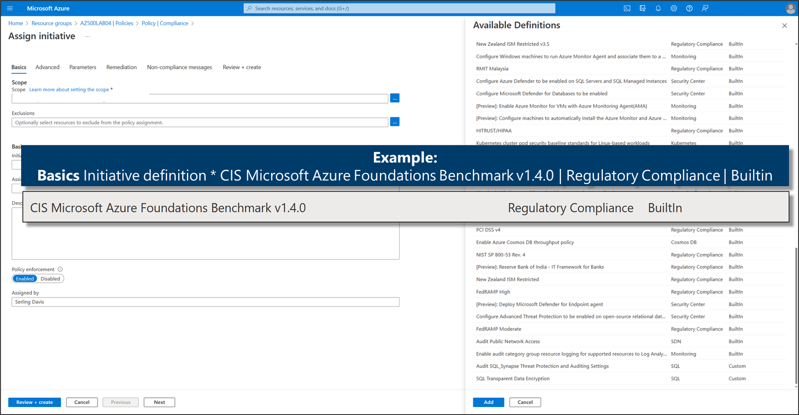
What is a security policy?
An Azure Policy definition, created in Azure Policy, is a rule about specific security conditions you want to be controlled. Built-in definitions include things like controlling what type of resources can be deployed or enforcing the use of tags on all resources. You can also create your own custom policy definitions.
To implement these policy definitions (whether built-in or custom), you'll need to assign them. You can assign any of these policies through the Azure portal, PowerShell, or Azure CLI. Policies can be disabled or enabled from Azure Policy.
There are different types of policies in Azure Policy. Defender for Cloud mainly uses 'Audit' policies that check specific conditions and configurations and then report on compliance. There are also "Enforce' policies that can be used to apply security settings.
Example: Built-in security policy

View and edit security policies
Defender for Cloud uses Azure role-based access control (Azure RBAC), which provides built-in roles you can assign to Azure users, groups, and services. When users open Defender for Cloud, they see only information related to the resources they can access. Users are assigned the owner, contributor, or reader role to the resource's subscription.
There are two specific roles for Defender for Cloud:
- Security Administrator: Has the same view rights as security reader. Can also update the security policy and dismiss alerts.
- Security reader: Has rights to view Defender for Cloud items such as recommendations, alerts, policy, and health. Can't make changes.
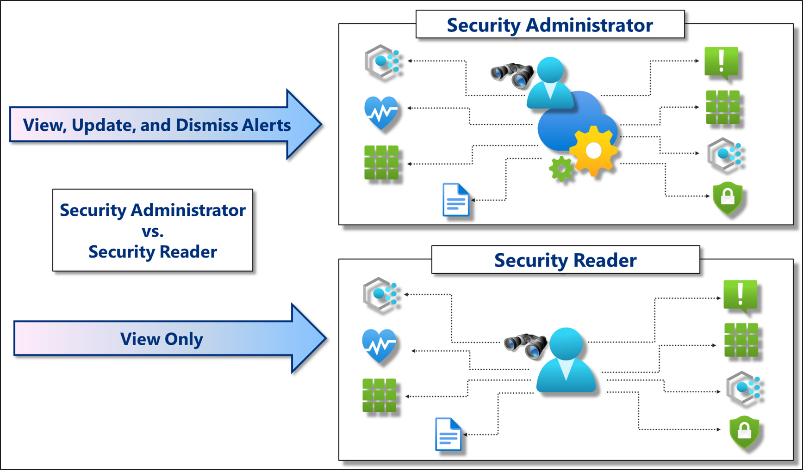
You can edit security policies through the Azure Policy portal via Representational State Transfer Application Programming Interface (REST API) or using Windows PowerShell.
The Security Policy screen reflects the action taken by the policies assigned to the subscription or management group you selected.
- Use the links at the top to open a policy assignment that applies to the subscription or management group. These links let you access the assignment and edit or disable the policy. For example, if you see that a particular policy assignment is effectively denying endpoint protection, use the link to edit or disable the policy.
- In the list of policies, you can see the effective application of the policy on your subscription or management group. The settings of each policy that apply to the scope are taken into consideration, and the cumulative outcome of actions taken by the policy is shown. For example, if one assignment of the policy is disabled, but in another, it's set to AuditIfNotExist, then the cumulative effect applies AuditIfNotExist. The more active effect always takes precedence.
- The policies' effect can be: Append, Audit, AuditIfNotExists, Deny, DeployIfNotExists, or Disabled.
Manage and implement Microsoft Defender for Cloud recommendations
What is a security recommendation?
Using the policies, Defender for Cloud periodically analyzes the compliance status of your resources to identify potential security misconfigurations and weaknesses. It then provides you with recommendations on how to remediate those issues. Recommendations result from assessing your resources against the relevant policies and identifying resources that aren't meeting your defined requirements.
Defender for Cloud makes its security recommendations based on your chosen initiatives. When a policy from your initiative is compared against your resources and finds one or more that isn't compliant, it's presented as a recommendation in Defender for Cloud.
Example: Microsoft Defender for Cloud - All recommendations

Recommendations are actions for you to take to secure and harden your resources. Each recommendation provides you with the following information:
- A short description of the issue
- The remediation steps to carry out in order to implement the recommendation
- The affected resources
In practice, it works like this:
-
Microsoft Cloud security benchmark is an initiative that contains requirements. For example, Azure Storage accounts must restrict network access to reduce their attack surface.
-
The initiative includes multiple policies, each requiring a specific resource type. These policies enforce the requirements in the initiative. To continue the example, the storage requirement is enforced with the policy "Storage accounts should restrict network access using virtual network rules."
- Microsoft Defender for Cloud continually assesses your connected subscriptions. If it finds a resource that doesn't satisfy a policy, it displays a recommendation to fix that situation and harden the security of resources that aren't meeting your security requirements. For example, if an Azure Storage account on your protected subscriptions isn't protected with virtual network rules, you see the recommendation to harden those resources.
So, (1) an initiative includes (2) policies that generate (3) environment-specific recommendations.
Security recommendation details
Security recommendations contain details that help you understand its significance and how to handle it.
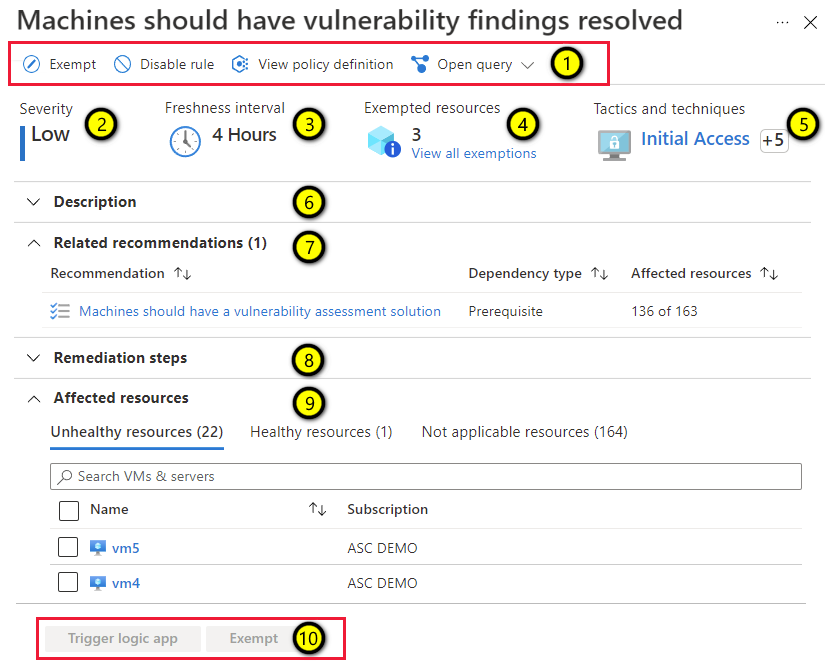
The recommendation details shown are:
- For supported recommendations, the top toolbar shows any or all of the following buttons:
- Enforce and Deny
- View the policy definition to go directly to the Azure Policy entry for the underlying policy.
- Open query - You can view the detailed information about the affected resources using Azure Resource Graph Explorer.
- Severity indicator
- Freshness interval
- Count of exempted resources if exemptions exist for a recommendation; this shows the number of resources that have been exempted with a link to view the specific resources.
-
Mapping to MITRE ATT&CK tactics and techniques if a recommendation has defined tactics and techniques, select the icon for links to the relevant pages on MITRE's site. This applies only to Azure-scored recommendations.
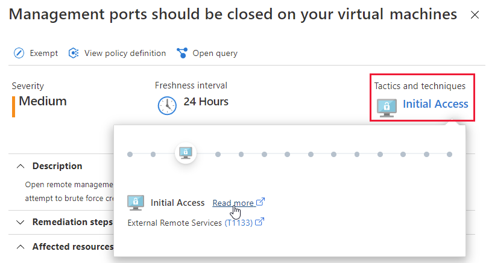 6. Description - A short description of the security issue. 7. When relevant, the details page also includes a table of related recommendations: The relationship types are: - Prerequisite - A recommendation that must be completed before the selected recommendation - Alternative - A different recommendation that provides another way of achieving the goals of the selected recommendation - Dependent - A recommendation for which the selected recommendation is a prerequisite For each related recommendation, the number of unhealthy resources is shown in the "Affected resources" column. 8. Remediation steps - A description of the manual steps required to remediate the security issue on the affected resources. For recommendations with the Fix option, you can select View remediation logic before applying the suggested fix to your resources. 9. Affected resources - Your resources are grouped into tabs: - Healthy resources – Relevant resources that either aren't impacted or on which you have already remediated the issue. - Unhealthy resources – Resources that are still impacted by the identified issue. - Not applicable resources – Resources for which the recommendation can't give a definitive answer. The not applicable tab also includes reasons for each resource. 10. Action buttons to remediate the recommendation or trigger a logic app. 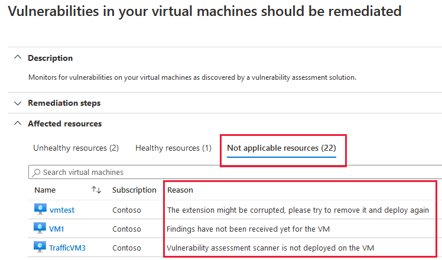
Viewing the relationship between a recommendation and a policy
As mentioned above, Defender for Cloud's built-in recommendations are based on the Microsoft cloud security benchmark. Almost every recommendation has an underlying policy that is derived from a requirement in the benchmark.
When you're reviewing the details of a recommendation, it's often helpful to be able to see the underlying policy. For every recommendation supported by a policy, use the View policy definition link from the recommendation details page to go directly to the Azure Policy entry for the relevant policy:

Use this link to view the policy definition and review the evaluation logic.
If you're reviewing the list of recommendations on our Security recommendations reference guide, you'll also see links to the policy definition pages:
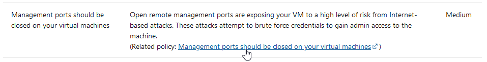
Explore secure score
Overview of secure score
Microsoft Defender for Cloud has two main goals:
- to help you understand your current security situation
- to help you efficiently and effectively improve your security
The central feature in Defender for Cloud that enables you to achieve those goals is the secure score.
Defender for Cloud continually assesses your cross-cloud resources for security issues. It then aggregates all the findings into a single score so that you can tell, at a glance, your current security situation: the higher the score, the lower the identified risk level.
- In the Azure portal pages, the secure score is shown as a percentage value, and the underlying values are also clearly presented:

- In the Azure mobile app, the secure score is shown as a percentage value, and you can tap the secure score to see the details that explain the score:

To increase your security, review Defender for Cloud's recommendations page and remediate the recommendation by implementing the remediation instructions for each issue. Recommendations are grouped into security controls. Each control is a logical group of related security recommendations and reflects your vulnerable attack surfaces. Your score only improves when you remediate all of the recommendations for a single resource within a control. To see how well your organization is securing each individual attack surface, review the scores for each security control.
How your secure score is calculated

To get all the possible points for security control, all of your resources must comply with all of the security recommendations within the security control. For example, Defender for Cloud has multiple recommendations regarding how to secure your management ports. You'll need to remediate them all to make a difference to your secure score.
Example scores for a control

In this example:
- Remediate vulnerabilities security control - This control group has multiple recommendations related to discovering and resolving known vulnerabilities.
- Max score - The maximum number of points you can gain by completing all recommendations within a control. The maximum score for a control indicates the relative significance of that control and is fixed for every environment. Use the max score values to triage the issues to work on first.
- Current score - The current score for this control. Current score = [Score per resource] * [Number of healthy resources] Each control contributes towards the total score. In this example, the control is contributing 2.00 points to the current total secure score.
- Potential score increase - The remaining points available to you are within your control. If you remediate all the recommendations in this control, your score will increase by 9%. Potential score increase = [Score per resource] * [Number of unhealthy resources]
- Insights - Gives you extra details for each recommendation, such as:
- Preview recommendation - This recommendation won't affect your secure score until it's GA.
- Fix - From within the recommendation details page, you can use 'Fix' to resolve this issue.
- Enforce - From within the recommendation details page, you can automatically deploy a policy to fix this issue whenever someone creates a non-compliant resource.
- Deny - From within the recommendation details page, you can prevent new resources from being created with this issue.
Which recommendations are included in the secure score calculations?
- Only built-in recommendations have an impact on the secure score.
- Recommendations flagged as Preview aren't included in the calculations of your secure score. They should still be remediated wherever possible so that when the preview period ends, they'll contribute towards your score.
- Preview recommendations are marked with:
Improve your secure score
To improve your secure score, remediate security recommendations from your recommendations list. You can remediate each recommendation manually for each resource or use the Fix option (when available) to resolve an issue on multiple resources quickly.
You can also configure the Enforce and Deny options on the relevant recommendations to improve your score and make sure your users don't create resources that negatively impact your score.
Frequently asked questions (FAQ) Secure score
If I address only three out of four recommendations in security control, will my secure score change?
No. It won't change until you remediate all of the recommendations for a single resource. To get the maximum score for a control, you must remediate all recommendations for all resources.
If a recommendation isn't applicable to me, and I disable it in the policy, will my security control be fulfilled and my secure score updated?
Yes. We recommend disabling recommendations when they're inapplicable in your environment.
If a security control offers me zero points toward my secure score, should I ignore it?
In some cases, you'll see a control max score greater than zero, but the impact is zero. When the incremental score for fixing resources is negligible, it's rounded to zero. Don't ignore these recommendations because they still bring security improvements. The only exception is the "Additional Best Practice" control. Remediating these recommendations won't increase your score, but it will enhance your overall security.
Define brute force attacks
Brute force attacks
A brute force attack is a type of hacking technique in which an attacker tries to gain access to a network or system by guessing the username and password combination through an automated process. The attacker typically uses a program that generates a large number of login attempts in a short period of time to try every possible combination of characters until the correct one is discovered. This type of attack can be very effective against weak passwords and security systems with no protection against brute force attacks, but it is time-consuming and can be detected by security measures such as account lockouts after a certain number of failed login attempts.
Management services, ports, and protocols
Adversaries without prior knowledge of legitimate credentials within the system or environment may guess passwords to attempt access to accounts. Without knowledge of the password for an account, an adversary may opt to systematically guess the password using a repetitive or iterative mechanism. An adversary may guess login credentials without prior knowledge of system or environment passwords during an operation by using a list of common passwords. Password guessing may or may not take into account the target's policies on password complexity or use policies that may lock accounts out after a number of failed attempts.
Typically, management services over commonly used ports are used when guessing passwords. Commonly targeted services include the following:

Brute force attack programs and use cases
These programs can be used individually or in combination to launch a successful brute force attack on a target network or system. There are several types of brute force attack programs used by attackers, including:
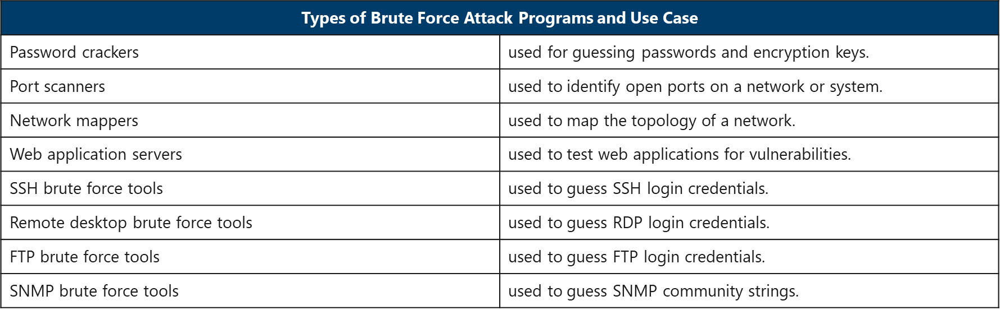
Indications of an attack
- Extreme counts of failed sign-ins from many unknown usernames
- Never previously successfully authenticated from multiple remote desktop protocol (RDP) connections or from new source IP addresses
Example: Potential SQL Brute Force attempt alert
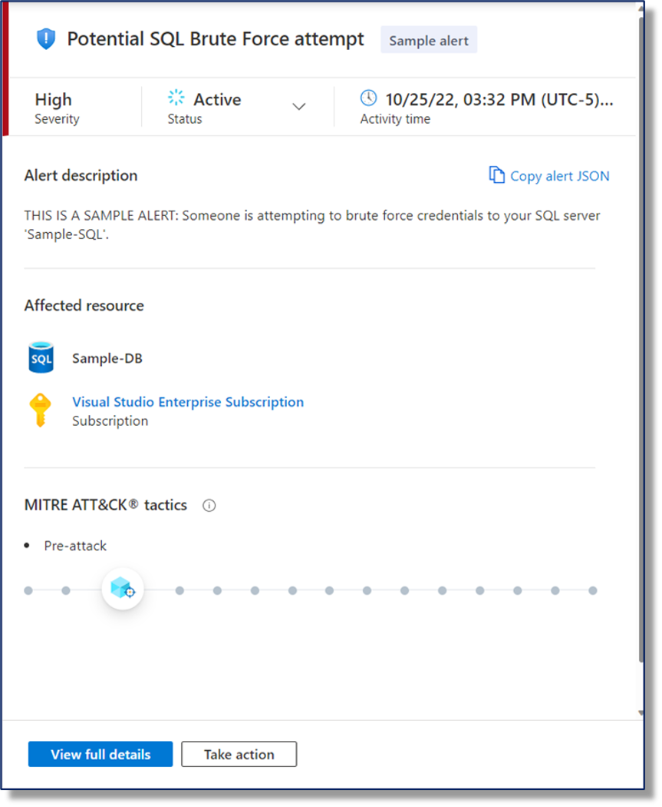
Practices to blunt a Brute Force Attacks
To counteract brute-force attacks, you can take multiple measures such as:
- Disable the public IP address and use one of these connection methods:
- Use a point-to-site virtual private network (VPN)
- Create a site-to-site VPN
- Use Azure ExpressRoute to create secure links from your on-premises network to Azure.
- Require two-factor authentication
- Increase password length and complexity
- Limit login attempts
- Implement Captcha
- About CAPTCHAs - Any time you let people register on your site or even enter a name and URL (like for a blog comment), you might get a flood of fake names. These are often left by automated programs (bots) that try to leave URLs on every website they can find. (A common motivation is to post the URLs of products for sale.) You can help make sure that a user is a real person and not a computer program by using a CAPTCHA to validate users when they register or otherwise enter their name and site.
- CAPTCHA stands for Completely Automated Public Turing test to tell Computers and Humans Apart. A CAPTCHA is a challenge-response test in which the user is asked to do something that is easy for a person to do but hard for an automated program to do. The most common type of CAPTCHA is one where you see distorted letters and are asked to type them. (The distortion is supposed to make it hard for bots to decipher the letters.)
- Limit the amount of time that the ports are open.
Understand just-in-time VM access
The risk of open management ports on a virtual machine
Threat actors actively hunt accessible machines with open management ports, like remote desktop protocol (RDP) or secure shell protocol (SSH). All of your virtual machines are potential targets for an attack. When a VM is successfully compromised, it's used as the entry point to attack further resources within your environment.
Why JIT VM access is the solution
As with all cybersecurity prevention techniques, your goal should be to reduce the attack surface. In this case, that means having fewer open ports, especially management ports. Your legitimate users also use these ports, so it's not practical to keep them closed. To solve this dilemma, Microsoft Defender for Cloud offers JIT. With JIT, you can lock down the inbound traffic to your VMs, reducing exposure to attacks while providing easy access to connect to VMs when needed.
How JIT operates with network resources in Azure and AWS
In Azure, you can block inbound traffic on specific ports, by enabling just-in-time VM access. Defender for Cloud ensures "deny all inbound traffic" rules exist for your selected ports in the network security group (NSG) and Azure Firewall rules. These rules restrict access to your Azure VMs’ management ports and defend them from attack.
If other rules already exist for the selected ports, then those existing rules take priority over the new "deny all inbound traffic" rules. If there are no existing rules on the selected ports, then the new rules take top priority in the NSG and Azure Firewall.
In AWS, by enabling JIT-access the relevant rules in the attached Amazon Elastic Compute Cloud (Amazon EC2) security groups, for the selected ports, are revoked which blocks inbound traffic on those specific ports.
When a user requests access to a VM, Defender for Cloud checks that the user has Azure role-based access control (Azure RBAC) permissions for that VM. If the request is approved, Defender for Cloud configures the NSGs and Azure Firewall to allow inbound traffic to the selected ports from the relevant IP address (or range), for the amount of time that was specified. In AWS, Defender for Cloud creates a new EC2 security group that allows inbound traffic to the specified ports. After the time has expired, Defender for Cloud restores the NSGs to their previous states. Connections that are already established are not interrupted.
Just-in-time VM enabled on an Azure Virtual Machine.
Example: Azure virtual machine
The diagram shows the logic that Defender for Cloud applies when deciding how to categorize your supported VMs (i.e., Azure Virtual Machine)
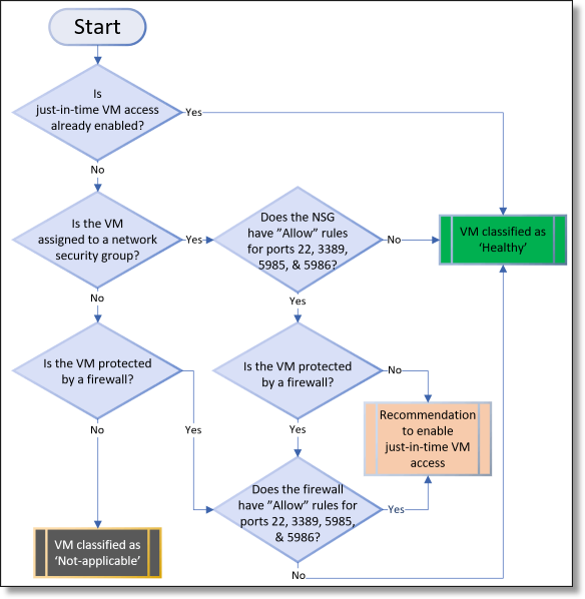
Just-in-time VM enabled on an AWS EC2 Instance.
The diagram shows the logic that Defender for Cloud applies when deciding how to categorize your supported VMs (i.e., AWS EC2 instance)
Example: AWS EC2 Instance
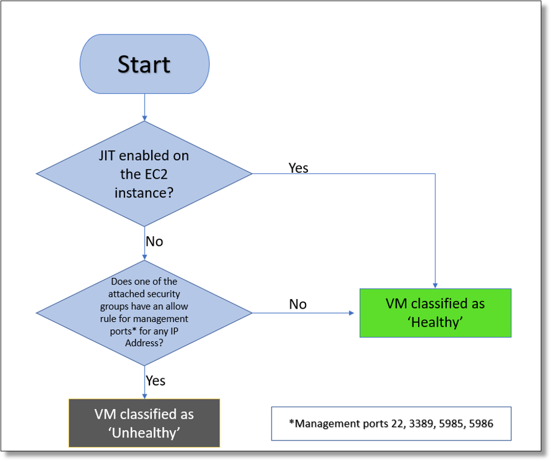
Added to the recommendation’s Unhealthy resources tab
The diagram shows the logic Defender for Cloud applies when deciding how to categorize your supported VM. When Defender for Cloud finds a machine that can benefit from JIT, it adds that machine to the recommendation's Unhealthy resources tab.
Example: Affected resources

Implement just-in-time VM access
Just-in-time (JIT) virtual machine (VM) access is used to lock down inbound traffic to your Azure VMs, reducing exposure to attacks while providing easy access to connect to VMs when needed.
When you enable JIT VM Access for your VMs, you next create a policy that determines the ports to help protect, how long ports should remain open, and the approved IP addresses that can access these ports. The policy helps you stay in control of what users can do when they request access. Requests are logged in the Azure activity log, so you can easily monitor and audit access. The policy will also help you quickly identify the existing VMs that have JIT VM Access enabled and the VMs where JIT VM Access is recommended.
How JIT VM Access works
To use Just-in-Time VM access, you must enable Microsoft Defender for Cloud.

After you enable Defender, you can view which virtual machines have JIT configured. Enable JIT on any virtual machine that is not Healthy.

For each virtual machine, you are recommended specific ports and access.

You can accept the recommendations or Add other ports of your choosing.

Once everything is in place, users must request access to the virtual machine. You can also monitor the usage of each virtual machine.

Perform try-this exercises
Task 1: Microsoft Defender for Cloud overview and recommendations
In this task, you will review Microsoft Defender for Cloud.
- In the Portal, navigate to Microsoft Defender for Cloud.
- Under General, select Overview.
- Discuss the Overview page.
- Under Management, select Environment settings.
- Select your subscription, and then review the Microsoft Defender for Cloud features.
- Return to the main Microsoft Defender for Cloud blade.
- Under General, select Recommendations.
- Review Secure Score, Recommendations status, and Resource Health.
- From the main Microsoft Defender for Cloud blade, under Cloud Security, select Regulatory compliance.
- Review the compliance assessment and available compliance controls.
- Scroll down and, under Microsoft cloud security benchmark, expand each compliance control to review several recommendations. For example, NS. Network Security, DP. Data Protection, and ES. Endpoint Security.
- From the main Microsoft Defender for Cloud blade, under Cloud Security, select Workload protections.
- Review the Defender for Cloud coverage, Security alerts, and Advanced protection features.
Knowledge check
- Which tasks are not included in the Microsoft Defender for Cloud free tier?
- Monitor IoT hubs and resources
- Monitor network access and endpoint security
-
Monitor non-Azure resources (Ans)
-
An organization compliance group requires client authentication using Azure AD and Key Vault diagnostic logs. What is the easiest way to implement the requirement for client authentication?
- Configure management groups
- Implement Microsoft Defender for Cloud policies (Ans)
-
Create Desired Configuration State scripts
-
An organization is working with an outside agency that needs to access a virtual machine. There's a real concern about brute-force login attacks targeted at virtual machine management ports. Which of the following components would open the management ports for a defined time range? Select one.
- Azure Firewall
- Bastion service
-
Just-in-Time virtual machine access (Ans)
-
When using Microsoft Defender for Cloud to provide visibility into virtual machine security settings, the monitoring system will notify administrators as issues arise. Which incident below would require a different monitoring tool to discover it?
- A newer operating system version is available. (Ans)
- System security updates and critical updates that are missing.
- Disk encryption is applied on virtual machines.
Summary
Microsoft Defender for Cloud and Secure Score is the keys to keeping your solutions and data secure.
You should be able to:
- Define the most common types of cyber-attacks
- Configure Microsoft Defender for Cloud based on your security posture
- Review Secure Score and raise it
- Lock down your solutions using Microsoft Defender for Cloud recommendations
Configure and monitor Microsoft Sentinel
Introduction
In the world we live in today, there is always the chance that your system may be hacked. What do you do at this point to find and evaluate a breach? Microsoft Sentinel is a tool to help you locate a breach and track what the intruder did while on your systems.
Scenario
A security engineer uses Microsoft Sentinel to discover and track a breach, you will work on such tasks as:
- Configure Microsoft Sentinel.
- Build queries to find breaches.
- Track incidents with investigation and hunting.
Enable Azure Sentinel
Microsoft Sentinel is a scalable, cloud-native, security information event management (SIEM) and security orchestration automated response (SOAR) solution. Microsoft Sentinel delivers intelligent security analytics and threat intelligence across the enterprise, providing a single solution for alert detection, threat visibility, proactive hunting, and threat response.
Value of a security information and event management tool
Security Operations (SecOps) teams are inundated with a high volume of alerts and spend far too much time in tasks like infrastructure setup and maintenance. As a result, many legitimate threats go unnoticed. According to the “Cybersecurity Jobs Report, 2018-2021” by Cybersecurity Ventures, An expected shortfall of 3.5M security professionals by 2021 will further increase the challenges for security operations teams. Alert fatigue is real. Security analysts face a huge burden of triage as they not only have to sift through a sea of alerts but also correlate alerts from different products manually or using a traditional correlation engine.
Microsoft Azure Sentinel
Microsoft Sentinel offers nearly limitless cloud scale and speed to address your security needs. Think of Microsoft Sentinel as the first SIEM-as-a-service that brings the power of the cloud and artificial intelligence to help security operations teams efficiently identify and stop cyber-attacks before they cause harm. Microsoft Sentinel enriches your investigation and detection by providing both Microsoft's threat intelligence stream and external threat intelligence streams.
Microsoft Sentinel integrates with Microsoft 365 solution and correlates millions of signals from different products such as Azure Identity Protection, Microsoft Cloud App Security, and soon Azure Advanced Threat Protection, Windows Advanced Threat Protection, M365 Advanced Threat Protection, Intune, and Azure Information Protection. It enables the following services: - Collect data at cloud scale across all users, devices, applications, and infrastructure, both on-premises and in multiple clouds. - Detect previously undetected threats, and minimize false positives using Microsoft's analytics and unparalleled threat intelligence. - Investigate threats with artificial intelligence, and hunt for suspicious activities at scale, tapping into years of cyber security work at Microsoft. - Respond to incidents rapidly with built-in orchestration and automation of common tasks

Building on the full range of existing Azure services, Microsoft Sentinel natively incorporates proven foundations, like Log Analytics, and Logic Apps. Microsoft Sentinel enriches your investigation and detection with AI, and provides Microsoft's threat intelligence stream, and enables you to bring your own threat intelligence.
Configure data connections to Sentinel
To onboard Microsoft Sentinel, you first need to connect to your security sources. Microsoft Sentinel comes with a number of connectors for Microsoft solutions, available out of the box and providing real-time integration, including Microsoft Threat Protection solutions, and Microsoft 365 sources, including Microsoft 365, Azure AD, Azure ATP, and Microsoft Cloud App Security, and more. In addition, there are built-in connectors to the broader security ecosystem for non-Microsoft solutions. You can also use common event format, Syslog or REST-API to connect your data sources with Microsoft Sentinel as well.
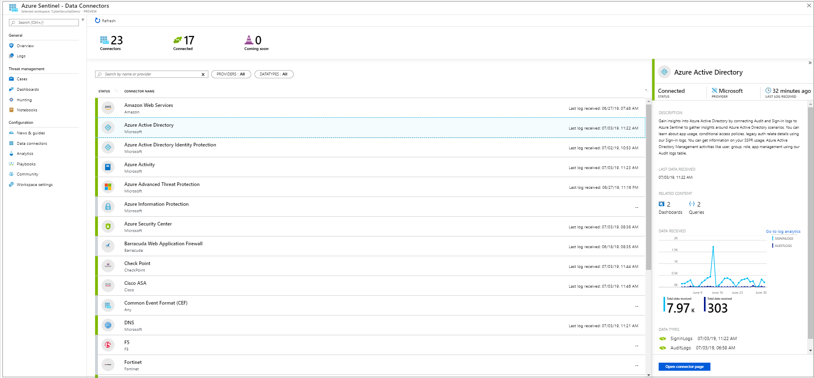
Data connection methods
The following data connection methods are supported by Microsoft Sentinel:
- Service to service integration: Some services are connected natively, such as AWS and Microsoft services, these services leverage the Azure foundation for out-of-the-box integration, the following solutions can be connected in a few clicks:
- Amazon Web Services - CloudTrail
- Azure Activity
- Azure AD audit logs and sign-ins
- Azure AD Identity Protection
- Azure Advanced Threat Protection
- Azure Information Protection
- Microsoft Defender for Cloud
- Cloud App SecurityCloud App Security
- Domain name server
- Microsoft 365
- Microsoft Defender ATP
- Microsoft web application firewall
- Windows firewall
- Windows security events
External solutions via API
Some data sources are connected using APIs that are provided by the connected data source. Typically, most security technologies provide a set of APIs through which event logs can be retrieved. The APIs connect to Microsoft Sentinel and gather specific data types and send them to Azure Log Analytics
External solutions via an agen
Microsoft Sentinel can be connected to all other data sources that can perform real-time log streaming using the Syslog protocol, via an agent. The Microsoft Sentinel agent, which is based on the Log Analytics agent, converts CEF formatted logs into a format that can be ingested by Log Analytics. Depending on the appliance type, the agent is installed either directly on the appliance, or on a dedicated Linux server.
Agent connection options
To connect your external appliance to Microsoft Sentinel, the agent must be deployed on a dedicated machine (VM or on-premises) to support the communication between the appliance and Microsoft Sentinel. You can deploy the agent automatically or manually. Automatic deployment is only available if your dedicated machine is a new VM you are creating in Azure.
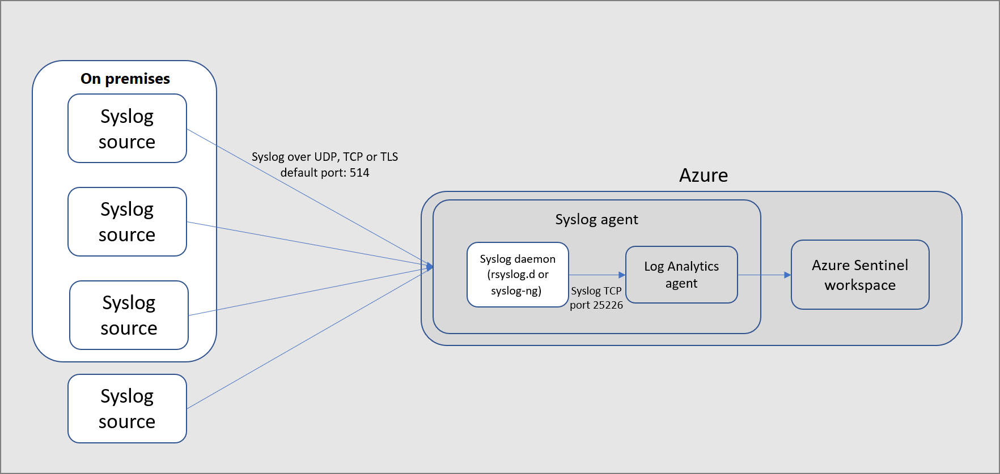
Alternatively, you can deploy the agent manually on an existing Azure VM, on a VM in another cloud, or on an on-premises machine.
Global prerequisites
- Active Azure Subscription
- Log Analytics workspace.
- To enable Microsoft Sentinel, you need contributor permissions to the subscription in which the Microsoft Sentinel workspace resides.
- To use Microsoft Sentinel, you need either contributor or reader permissions on the resource group that the workspace belongs to.
- Additional permissions may be needed to connect specific data sources.
- Microsoft Sentinel is a paid service.
Create workbooks for explore Sentinel data
After you connect your data sources to Microsoft Sentinel, you can monitor the data using the Microsoft Sentinel integration with Azure Monitor Workbooks, which provides versatility in creating custom workbooks. While Workbooks are displayed differently in Microsoft Sentinel, it may be helpful for you to determine how to create interactive reports with Azure Monitor Workbooks. Microsoft Sentinel allows you to create custom workbooks across your data and comes with built-in workbook templates to quickly gain insights across your data as soon as you connect a data source.
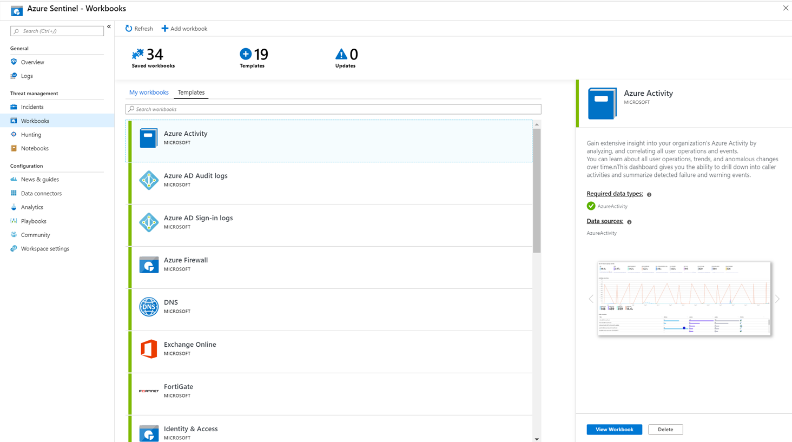
Workbooks combine text, Analytics queries, Azure Metrics, and parameters into rich interactive reports. Workbooks are editable by other team members who have access to the same Azure resources.
Workbooks are helpful for scenarios like:
- Exploring the usage of your app when you don't know the metrics of interest in advance: numbers of users, retention rates, conversion rates, etc. Unlike other usage analytics tools, workbooks let you combine multiple kinds of visualizations and analyses, making them great for this kind of free-form exploration.
- Explaining to your team how a newly released feature is performing by showing user counts for key interactions and other metrics.
- Sharing the results of an A/B experiment in your app with other members of your team. You can explain the goals for the experiment with text, then show each usage metric and Analytics query used to evaluate the experiment, along with clear call-outs for whether each metric was above- or below-target.
- Reporting the impact of an outage on the usage of your app, combining data, text explanation, and a discussion of next steps to prevent outages in the future.
Saving and sharing workbooks with your team
Workbooks are saved within an Application Insights resource, either in the My Reports section that's private to you or in the Shared Reports section accessible to everyone with access to the Application Insights resource. A workbook can be shared with a link or via email. Keep in mind that recipients of the link need access to this resource in the Azure portal to view the workbook. To make edits, recipients need at least Contributor permissions for the resource.
Analytics
To help you reduce noise and minimize the number of alerts you have to review and investigate, Microsoft Sentinel uses analytics to correlate alerts into incidents. Incidents are groups of related alerts that together create a possible actionable threat that you can investigate and resolve. Use the built-in correlation rules as-is, or use them as a starting point to build your own. Microsoft Sentinel also provides machine learning rules to map your network behavior and then look for anomalies across your resources. These analytics connect the dots by combining low-fidelity alerts about different entities into potential high-fidelity security incidents.
Enable rules to create incidents
Alerts triggered in Microsoft security solutions that are connected to Microsoft Sentinel, such as Microsoft Defender for Cloud Apps and Azure Advanced Threat Protection, do not automatically create incidents in Microsoft Sentinel. By default, when you connect a Microsoft solution to Microsoft Sentinel, any alert generated in that service will be stored as raw data in Microsoft Sentinel, in the Security Alert table in your Microsoft Sentinel workspace. You can then use that data like any other raw data you connect to Sentinel.
Prerequisites
You must connect Microsoft security solutions to enable incident creation from security service alerts.
Using Microsoft Security incident creation analytic rules
Use the built-in rules available in Microsoft Sentinel to choose which connected Microsoft security solutions should create Microsoft Sentinel incidents automatically in real-time. You can also edit the rules to define more specific options for filtering which of the alerts generated by the Microsoft security solution should create incidents in Microsoft Sentinel. For example, you can choose to create Microsoft Sentinel incidents automatically only from high-severity Microsoft Defender for Cloud alerts.

You can create more than one Microsoft Security analytic rule per Microsoft security service type. This action does not create duplicate incidents since each rule is used as a filter. Even if an alert matches more than one Microsoft Security analytic rule, it creates just one Microsoft Sentinel incident.
When you connect a Microsoft security solution, you can select whether you want the alerts from the security solution to automatically generate incidents in Microsoft Sentinel automatically.
Configure playbooks
Security automation and orchestration lets you automate your common tasks and simplify security orchestration with playbooks that integrate with Azure services as well as your existing tools. Built on the foundation of Azure Logic Apps, Azure Sentinel's automation and orchestration solution provides a highly-extensible architecture that enables scalable automation as new technologies and threats emerge. To build playbooks with Azure Logic Apps, you can choose from a growing gallery of built-in playbooks. These include 200+ connectors for services such as Azure functions. The connectors allow you to apply any custom logic in code, ServiceNow, Jira, Zendesk, HTTP requests, Microsoft Teams, Slack, Windows Defender ATP, and Cloud App Security.
For example, if you use the ServiceNow ticketing system, you can use the tools provided to use Azure Logic Apps to automate your workflows and open a ticket in ServiceNow each time a particular event is detected.
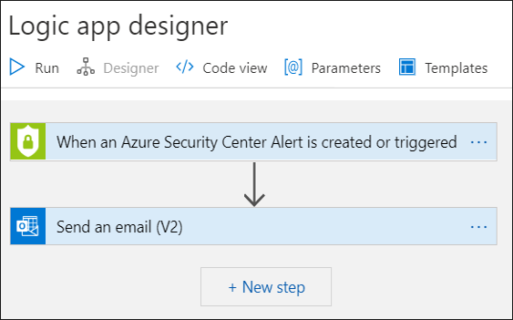
Hunt and investigate potential breaches
Currently in preview, Microsoft Sentinel deep investigation tools help you to understand the scope and find the root cause, of a potential security threat. You can choose an entity on the interactive graph to ask interesting questions for a specific entity, and drill down into that entity and its connections to get to the root cause of the threat.
An incident can include multiple alerts. It's an aggregation of all the relevant evidence for a specific investigation. An incident is created based on analytic rules that you created in the Analytics page. The properties related to the alerts, such as severity, and status, are set at the incident level. After you let Microsoft Sentinel know what kinds of threats you're looking for and how to find them, you can monitor detected threats by investigating incidents.
Use the investigation graph to deep dive
The investigation graph enables analysts to ask the right questions for each investigation. The investigation graph helps you understand the scope, and identify the root cause, of a potential security threat by correlating relevant data with any involved entity. You can dive deeper and investigate any entity presented in the graph by selecting it and choosing between different expansion options.
The investigation graph provides you with: - Visual context from raw data: The live, visual graph displays entity relationships extracted automatically from the raw data. This enables you to easily view connections across different data sources. - Full investigation scope discovery: Expand your investigation scope using built-in exploration queries to surface the full scope of a breach. - Built-in investigation steps: Use predefined exploration options to make sure you are asking the right questions in the face of a threat.
To use the investigation graph:
Select an incident, then select Investigate. This takes you to the investigation graph. The graph provides an illustrative map of the entities directly connected to the alert and each resource connected further.

You'll only be able to investigate the incident if you used the entity mapping fields when you set up your analytic rule. The investigation graph requires that your original incident includes entities.
Hunting
Use Microsoft's Sentinel's powerful hunting search-and-query tools, based on the MITRE framework, which enable you to proactively hunt for security threats across your organization’s data sources, before an alert is triggered. After you discover which hunting query provides high-value insights into possible attacks, you can also create custom detection rules based on your query, and surface those insights as alerts to your security incident responders. While hunting, you can create bookmarks for interesting events, enabling you to return to them later, share them with others, and group them with other correlating events to create a compelling incident for investigation.
For example, one built-in query provides data about the most uncommon processes running on your infrastructure. You may not want an alert each time they are run.
With Microsoft Sentinel hunting, you can take advantage of the following capabilities:
- Built-in queries: To get you started, a starting page provides preloaded query examples designed to get you started and get you familiar with the tables and the query language. These built-in hunting queries are developed by Microsoft security researchers on a continuous basis, adding new queries, and fine-tuning existing queries to provide you with an entry point to look for new detections and figure out where to start hunting for the beginnings of new attacks.
- Powerful query language with IntelliSense: Built on top of a query language that gives you the flexibility you need to take hunting to the next level.
- Create your own bookmarks: During the hunting process, you may come across matches or findings, dashboards, or activities that look unusual or suspicious. In order to mark those items so you can come back to them in the future, use the bookmark functionality. Bookmarks let you save items for later, to be used to create an incident for investigation.
- Use notebooks to automate investigation: Notebooks are like step-by-step playbooks that you can build to walk through the steps of an investigation and hunt. Notebooks encapsulate all the hunting steps in a reusable playbook that can be shared with others in your organization.
- Query the stored data: The data is accessible in tables for you to query. For example, you can query process creation, DNS events, and many other event types.
- Links to the community: Leverage the power of the greater community to find additional queries and data sources.
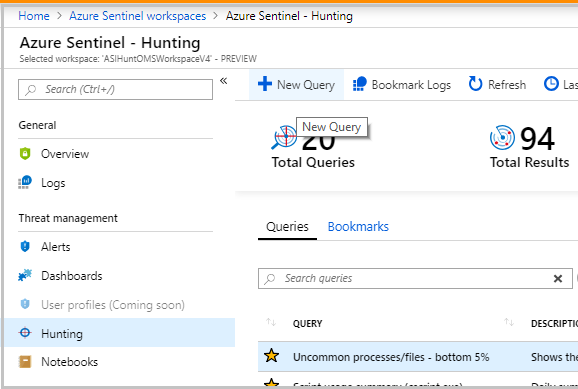
Community
The Microsoft Sentinel community is a powerful resource for threat detection and automation. Our Microsoft security analysts constantly create and add new workbooks, playbooks, hunting queries, and more, posting them to the community for you to use in your environment. You can download sample content from the private community GitHub repository to create custom workbooks, hunting queries, notebooks, and playbooks for Microsoft Sentinel.
Knowledge check
-
Where can custom security alerts be created and managed?
-
Azure Security Center
- Azure Sentinel (Ans)
-
Azure Storage
-
Which of the items below would exceed the capabilities of an Azure Sentinel playbook?
-
A Sentinel playbook can help automate and orchestrate an incident response.
- A Sentinel playbook be run manually or set to run automatically when specific alerts are triggered.
-
A Sentinel playbook be created to handle several subscriptions at once. (Ans)
-
Sentinel is being used to investigate an incident. When viewing the incident detailed information, which value has to be assigned, instead of being included in the data?
-
Incident ID
- Incident owner (Ans)
-
Number of entities involved
-
When creating roles within a security operations team to grant appropriate access to Azure Sentinel. Which role below would have to be created versus being built-in?
-
Azure Sentinel reader
- Azure Sentinel responder
-
Azure Sentinel owner (Ans)
-
An investigator wants to be proactive about looking for security threats. The security officer has read about Sentinel’s hunting capabilities and notebooks. What is an Azure Sentinel notebook?
-
A step-by-step playbook that provides the ability to walk through the steps of an investigation and hunt. (Ans)
- A table to query and locate actions like DNS events.
- A saved item for the creation of an incident for investigation.